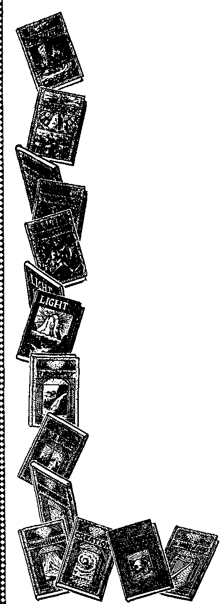

A JOURNAL OF FACT HOPE AND COURAGE

iiiiiiiiiiiiiiiiiiiiiiiiiiiiiiiiiiiiiiiiiiiiiiiiiiiiimiiiiiiiiiiiiiiiiimiiii
in this issue
PERSECUTION IN GERMANY
AN ACQUITTAL
A WORLD-WIDE DEMAND
FREE SPEECH A NECESSITY NOTES ON NEWS 'NOT THREAT, BUT WARNING’ iiiiiiiiiiiiiiiiiiiiiiiiiiiiiiiiiiiiiiiiiiiiiiiiiiiiiiiiiiiiiittiiiiiiiiiiuiiii every other WEDNESDAY five cents a copy one dollar a year Canada & Foreign 1.25
Vol. XV - No. 381 April 25, 1934
.■cxg). । ....... .gyu..
• • ' ■ 1 1 • .
LABOR AND ECONOMICS
Natural Disasters Not the Worst . 463
What $1,800,000 Would Do . . 479
SOCIAL AND EDUCATIONAL
Freedom of Utterance a Vital Necessity
No Controversial Subjects? . . 468
If You Mean It, Sign It . . . 468
Teachers Unpaid and Underpaid . 468
New York City’s Charity Bill . . 468
Chicago Fair—Continued . . . 468
Printing Bibles ....... 471
FINANCE—COMMERCE—TRANSPORTATION
Over-Water Formation Flying . 473
POLITICAL—DOMESTIC AND FOREIGN
Fort Wayne Awfully Bad . . . 469
When Children May Leave School 469
Why Private Companies Handle Air Mails
AGRICULTURE AND HUSBANDRY
Picking Strawberries in November 470
Durov—Animal Trainer .... 471
SCIENCE AND INVENTION
Ultra-Violet Lamp Bulbs . . . 470
HOME AND HEALTH
Aluminum Safe?......470
Danger in Electric Appliances . 470
Made to Live Forever .... 470
The Home of Tomorrow . . . 470
Fruit Juices from Coal Mines . . 471
RELIGION AND PHILOSOPHY
Persecution in Germany . . . 451 Exceedingly Interesting .
News Item.......463
The Demand of Jehovah God . 464 ‘Not to Threaten, dut to Warn’ 474
••«><©•------- —■ ..............—' ----- ---
Published every other Wednesday by
GOLDEN AGE PUBLISHING COMPANY, INC.
117 Adams Street, Brooklyn, N. Y„ U. 8. A.
Clayton J. Woodworth President Nathan II. Knorr Vice President
Charles E. Wagner Secretary and Treasurer
FIVE CENTS A COPY $1 a year, United States ; $1.25 to Canada and all other countries.
Notice to Subscribers remittances : For your own safety, remit by postal or express money order. When coin or currency is lost in the ordinary mails, there is no redress. Remittances from countries other than those named below may be made to the Brooklyn office, but only by international postal money order.
receipt of a new or renewal subscription will be acknowledged only when requested. notice of expiration is sent with the journal one month before subscription expires. Please renew promptly to avoid loss of copies.
change of address : Subscribers will please notify this office of change of .address at least two weeks in advance.
published also in Danish. Dutch, Esperanto, Finnish, French. German, Greek, Japanese, Norwegian, Polish, Slovak, Spanish, Swedish.
Offices for Other Countries
Jiritish........34 Craven Terrace, London, W. 2, England
Canadian ....... 40 Irwin Avenue. Toronto 5, Ontario. Canada Australasian .... 7 Beresford Road, Strathfield, N. S. W., Australia South African.......Boston House, Cape Town, South Africa
Entered as second-class matter at Brooklyn, N. Y., under the Act of March 3, 1879. ----—
Volume XV Brooklyn, N. Y., Wednesday, April 25, 1934 Number 381
Persecution in Germany
MORE than thirty years ago the Watch Tower Bible & Tract Society, incorporated under the laws of the United States of America, established in Germany a branch office, and from that time until 1933 continuously taught the truth of the Bible without money and without price. Many thousands of German people came to a knowledge of the truth of God’s kingdom and rejoice in their privilege of worshiping and serving Jehovah God. Many of such persons had been Catholics, others Protestants, and still others outside of all church organizations. During all that time the progress of the Society’s work in preaching the gospel of Jesus Christ, which was carried on by many good men and women of Germany, was bitterly opposed by the clergy, both Catholics and Protestants. Time and again the clergy published all manner of falsehood against God’s people, Jehovah’s witnesses, but the political rulers gave no heed thereto.
The revolution that brought into power the Hitler government also brought about a change. The clergy got the ear of the political powers and induced them to act against Jehovah’s witnesses, which are known throughout Germany as International Bible Students and the Watch Tower Bible & Tract Society. The Hitler government, on the theory that these Christian people, Jehovah’s witnesses, were a menace to the state and threatened the peace and safety of the state, acted upon the slanderous and libelous statements published by the clergy and prohibited Jehovah’s witnesses from carrying on their work. These faithful Christians were wrongfully charged with being in alliance with Jews, Marxists and anti-National Socialists. Without even a notice of such charges, and with no opportunity given Jehovah’s witnesses to make proof of the falsity thereof, and without any hearing of the facts whatsoever, the Hitler government did on the 4th day of April, 1933, issue an order prohibiting the operation of said Society or Jehovah’s witnesses and seized and confiscated property of the Society then at the value of two million five hundred thousand marks. Such action of seizure was in violation of the treaty between the United States and Germany and, the property so seized and confiscated being that of an American corporation, the American government intervened and on the 28th of April, 1933, such order of confiscation was rescinded and set aside and the property returned to the possession of its rightful owners.
Again on the 24th of June, 1933, and without any notice whatsoever, and without a hearing of the facts, the German government seized said Society’s property above mentioned and again stopped its work in Germany. The United States government, under the terms of the aforesaid treaty, again intervened on behalf of the Society, and in October, 1933, the German government again released the property from such seizure, but still refused to permit the Society to use the same in carrying on its work. The German government by its officials announced that the Watch Tower Bible & Tract Society and the International Bible Students Association could bring suit in the German courts for damages resulting by reason of such seizure and could find relief in that way. Demands were made to do this by filing suits in the courts, but when this attempt was made the German government flatly denied the right to maintain such suits. In the meantime German authorities had seized a great amount of other property throughout the various states of Germany and destroyed much of it, broke up the meetings, prohibited Jehovah’s witnesses from meeting together to study the Bible, confiscated their books, Bibles and other literature and threw many of them into prison and concentration camps.
Repeated efforts have been made to have a hearing before the German authorities to the end that the facts might be presented, and that the proof might be brought forth to fully establish the fact that the Society is not in any wise connected with any political organization, but all such efforts have utterly failed. German officials have promised a hearing, but when an attempt has been made to reach them they have refused to see anyone representing the Society who attempted to place the facts before them.
At a convention of seven thousand of Jehovah’s witnesses held in Berlin in June, 1933, a statement of the facts was issued in the form of a Resolution or Declaration, millions of which w’ere printed and copies delivered to German officials, and many others distributed throughout Germany. While our brethren were engaged in the distribution of this Declaration of facts many of them were arrested and thrown into prison and concentration camps. The German officials have shown that they do not want to know the real facts, but that they are moved by some sinister and powerful influence determined to do injury to Jehovah’s witnesses and to prevent the proclamation of the message of Jehovah’s kingdom.
The action of the German government in seizing the Society’s property and in prohibiting its work of religious worship and service throughout Germany not only is in direct violation of the treaty between the United States and Germany, but is also a flagrant violation of the terms of the Constitution of Germany. Section 137 of that Constitution reads:
1. There is no State church.
2. The freedom of cohesion to religious societies is guaranteed. There are no limits to the cohesion of religious societies within the territories of the Reich. 3. Every religious society organizes and manages its own affairs independently, within the bounds of the law, which is valid for all. It bestows its offices without the cooperation of the state or of the civil community.
4. Religious societies acquire legal competence, in accordance with the general regulations of civil law. 5. The religious societies remain corporations of public law, in as far as they have been such hitherto. Other religious societies have, on their petition, to be granted the same rights, if they give the guarantee of duration, by virtue of their Constitution and the number of their members. Should several such publicly legal religious societies join up and form a union, then also this union is a publicly legal corporation.
6. The religious societies which are corporations of public law are entitled to levy taxes, on basis of the civil tax lists, in accordance with the legal regulations of the country.
7. On the same level as the religious societies are put the religious associations which have their own “Weltanschauung” (religious opinion — world’s contemplation??)-
This section of the Constitution has never been suspended, but at all times has been in full force and effect, and yet its terms have been repeatedly violated with reference to Jehovah’s witnesses. Many petitions of German citizens have been sent to the German officials calling attention to the violation of the Constitution in the action taken against the Bible Students or said Society, but these petitions have been ignored.
In Saxony several men and women were arrested and prosecuted for the distribution of the Berlin Declaration above mentioned. They made defense in the courts. When their case came on to be heard on appeal in a superior court of Leipzig in Saxony that court acquitted the defendants and discharged them, and in the opinion filed the court, amongst other things, said: “If the Association is one in the sense of a religious society, then the prohibition would be an infringement of the Constitution.” A legal authority, to wit, Dictionary of Legal Science, by Dr. E. Bumke, president of the Supreme Court of the Reich, and Dr. Ebermeyer, attorney general of the Reich, among other things says this concerning religious societies: “As regards such religious societies, above all into consideration, the Methodists, the free community, the new apostolical, Bible Students, and others are included.” Upon the strength of the decision of the above court, and the opinion and authority above cited, again application was made to the State Court for the German Reich, the Supreme Court of the Reich, to have the grievances of the Bible Students, or Jehovah’s witnesses, heard, and this the courts have denied.
Jehovah’s witnesses in Germany have made every possible effort to present their case before the German authorities, asking that all restrictions and hindrances be removed and that they be permitted without interference to go on with their worship of God and their service to Him according to His commandments, and which is guaranteed by the Constitution of Germany. All their efforts in this behalf have failed.
The following letter was addressed to Mr.
Hitler and was delivered to him by a special messenger, which speaks for itself:
Sir:
This letter is a kindly notice and warning of things that are of vital importance to your welfare. You will find it to your interest to read it carefully.
In Germany for many years faithful and good men and women have been teaching the doctrines of God’s Word, which people jointly work under organizations bearing the name of Earnest Bible Students and the Watch Tower Bible & Tract Society, which names merely represent the Society or corporate organization for the carrying on of their work. These men and women are devoted to Jehovah God and serve Him as His witnesses, telling the people what is the truth of the Bible. They seek to do good unto all men and injury to none.
In the early spring of 1933 your government without just cause or excuse forcibly compelled these earnest Christian people, who are Jehovah’s witnesses, to cease the worship of Jehovah God in the way which God has commanded them to worship; seized their Bibles, song books, Bible textbooks, and other Bible literature, and their furniture, drove them out of their places of worship, and forbade them to assemble together to study the Scriptures and to worship God, and to preach the truth to others.
Your government also without just cause or excuse seized a great amount of books, Bibles, paintings, paper and other material, and destroyed the same by fire, which property belonged to the aforesaid Society. Many of these innocent and faithful witnesses of Jehovah God your officers have incarcerated in prison, and illtreated them. You being a very busy man, probably many of these things have not been brought to your attention; but that is not the fault of those who have been unjustly and cruelly treated.
Enemies of Jehovah’s witnesses have maliciously misrepresented them and told vicious lies against them in order to induce your government to do injury to them. In order that the government might be informed as to the real facts more than seven thousand of Jehovah’s witnesses assembled in Berlin, Germany, on the 25th day of June, 1933, and there issued a Declaration setting forth the facts concerning their work in Germany, which declaration was furnished to all the high officials of your government, and millions of copies thereof were distributed amongst the people until such distribution was forcibly stopped by officers of your government. That Declaration, a copy of which is hereto attached, called upon your government to see to it that these faithful people, who are Jehovah’s witnesses, might “without hindrance obey Jehovah God’s commandments and worship Him as commanded, and tell the people of His kingdom for the blessing of all the families of the earth’’.
That request has been ignored by your government, and you have refused to permit these witnesses of Jehovah to serve Him and worship Him as commanded by the Most High.
These faithful followers of Christ Jesus and who are Jehovah’s witnesses have waited and suffered long, hoping that you would cause their unjust treatment to cease and permit them to go on with their worship and service of Jehovah God without interference. But yoif have failed to do so. During the past ten years the rulers and the people of Germany have received notice by the wide publication of literature that God’s kingdom is here and that His King, Christ Jesus, will establish a righteous government on earth for the blessing of the people. They have been warned that those who oppose God and His kingdom shall be destroyed by the Lord at Armageddon. Such notice and warning have been ignored by your government.
Permit me to remind you that Jehovah God sent His servant Moses to Egypt to give notice and warning to Pharaoh that he must let God’s chosen people go and worship Him in the manner that He had commanded. Such notice and warning Pharaoh not only ignored, but he defied Jehovah God, and the result was that Jehovah killed all the firstborn of Egypt and then destroyed the ruling power. (See Exodus 12: 29, 30; 14: 23-28.) The Scriptures plainly declare that what came upon Egypt will come in a far greater degree upon all the world, and particularly upon those who oppose Jehovah God and His kingdom. You may successfully resist any and all men, but you cannot successfully resist Jehovah God.
Pharaoh said to Moses: “Who is the Lord [Jehovah], that I should obey his voice?’’ (Exodus 5:2) Later he learned to his sorrow who Jehovah is. Jehovah’s witnesses have done everything within their power to show your government that they only want to freely worship Jehovah God and serve Him as He has commanded them, but their efforts have been ignored and their maltreatment continues by your officials. Once more in their behalf, as the president of the Society or organization under which they work, and in the name of Jehovah God and His anointed King, Christ Jesus, I demand that you give order to all officials and servants of your government that Jehovah’s witnesses [who are of the Earnest Bible Students and the Watch Tower Bible & Tract Society] in Germany be permitted to peaceably assemble and without hindrance worship God and obey His commandments by teaching to the people the Bible truths concerning God’s kingdom under Christ, for which kingdom all Christians have long hoped and prayed.
If by the 24th day of March, 1934, there is no response to this earnest demand and nothing done by your government to grant the relief of the aforesaid Jehovah’s witnesses in Germany, then God’s people in other countries will begin the publication throughout the nations of the earth of the facts concerning Germany’s wrongful treatment of Christian people there; and having delivered the testimony, we will submit our case and leave it to Jehovah God by and through Christ Jesus to administer the punishment of the guilty ones in His own good way. Permit me to remind you that Jehovah warns that no one shall oppress His anointed. (Psalm 105:15) Christ Jesus is now on His throne, and the battle of the great day of God Almighty is just ahead, and it will be the greatest tribulation ever known, and there is just one way of escape: “Be wise now, therefore, 0 ye kings; be instructed, ye judges of the earth. Serve the Lord with fear, and rejoice with trembling. Kiss the Son, lest he be angry, and ye perish from the way, when his wrath is kindled but a little. Blessed are all they that put their trust in him. ’ ’—Psalm 2:10-12.
Respectfully submitted.
Watch Tower Bible & Tract Society, By
San Diego, California, February 9, 1934.
To
Chancellor Adolf Hitler, Brown House, Munich, Germany.
Like Pharaoh of old, the official power of the German government has repeatedly said that everyone has the right to worship God as he wishes and yet in the face of its own laws and declarations continues to refuse Jehovah’s witnesses the right to worship Jehovah God and carry on their work. These officials furthermore defame the name of Jehovah and persecute those who attempt to serve Him. In harmony with the terms of the foregoing letter addressed to Mr. Hitler, a mass assembly of Jehovah’s witnesses at Los Angeles, California, on the 25th day of March, 1934, unanimously adopted the Protest following:
PROTEST
For many years Jehovah’s witnesses in Germany, unitedly working under the Watch Tower Bible & Tract Society, have engaged in bearing testimony to the name and kingdom of Jehovah God. During the past year the German government without cause or excuse has wrongfully seized, confiscated and destroyed the Bibles, song books, furniture and other property of these faithful Christians, prohibited them to meet together and worship God according to His commandments, and has cruelly persecuted and imprisoned many of them, and, like Pharaoh of old, that government has wickedly opposed Jehovah and defamed His name.
Therefore, We their brethren as followers of Christ Jesus do earnestly and vigorously protest against such unwarranted treatment of Christians by the German ruling power, and we call upon all true Christians and fair-minded people throughout the earth to join in this vigorous protest and demand that Jehovah’s witnesses, without let or hindrance on the part of the German government or others, shall be permitted to go on in their worship and service of Jehovah God in the manner which He has commanded, and we register our protest by declaring against Satan and all such oppression and by taking our stand on the side of Jehovah and His kingdom and His people.
This Protest and accompanying speech was broadcast by a nation-wide network of radio stations, and the information is that many thousands of the unseen audience likewise arose and affirmatively voted for the adoption of such Protest. This publication is made for the purpose of informing the order-loving people of the earth of the unrighteous action of the German government against honest and faithful and true Christians, in order that the German officials who have thus wrongfully acted upon the advice of the clergy may never be heard to say that they -were ignorant of the fact that they were persecuting faithful and true followers of Christ Jesus. The following has been prepared by one of Jehovah’s witnesses who is in possession of many of the facts, letters and communications from those throughout Germany who have been wrongfully persecuted, thrown into concentration camps, and imprisoned, and which facts speak for themselves, to wit:
JEHOVAH GOD REPROACHED
Official leaders of the present government in Germany have slandered the name of Jehovah God, not only by their words, but also by their deeds in destroying great quantities of Bibles and Bible textbooks and by persecuting, by imprisoning and by mistreating Christians on account of their faith and their serving God in the way He has commanded them to do, namely, by proclaiming the good tidings of the establishment of Christ’s kingdom for the blessing of all nations.
Satan, acting through the clergy, is responsible for these persecutions and for hindering the work of God’s anointed in Germany, and he has blinded the political element and has caused the German authorities to believe the false and slanderous charges which have been raised against Jehovah’s witnesses by the godless and faithless clergy class in Germany.
The publication of the following facts does not constitute a Jewish or Marxistic or antiNational Socialist propaganda, but it is a true record which is now published because God’s enemies and the enemies of the truth, after having been warned repeatedly, have made it necessary. This is in defense of our brethren in Christ who are suffering innocently. For a whole year we have waited and have suffered the unjustified and cruel measures of the German government; we have waited (in vain) for a release because the treaty between America and Germany guaranteed that our activity could be carried on without hindrance, and because, according to many public utterances of the present leaders in Germany, who claim to be sent of God, liberty of faith and conscience was supposed to be safeguarded in the Third Reich. For example: Reichskanzler Adolf Hitler, in April, 1933, said: “Nationally and racially thinking men have the holy obligation to take care that everyone in his own religion should not only speak outwardly of God’s will, but he should really fulfil God’s will and see to it that God’s work is not dishonored. Whoever destroys God’s work is therefore fighting against God’s will and the creation of the Lord.” Thus he and his officials are judged by his own words. He also said that if a man knows a thing, sees a danger and a possibility of help, “then it is his damned duty and obligation, not to work quietly, but to stand publicly against the evil and for its remedy; and if he does not do it, then he is a coward and a weakling.” Reichsminister Rudolf Hess, Hitler’s right-hand man, said, in October, 1933: “Confession and faith, or no confession, is every man’s own and private affair, which he must account for to his own conscience. Coercion of conscience must not be exercised.” Reichskanzler Hitler also said in his book Mein Kampf: “Man’s relation to his God is holy and must be respected,” and that political power and religious matters must be kept separate.
In view of these utterances, which we accepted as truthful statements, many letters and requests were submitted to the German authorities regarding the unlawful and oppressive measures against our Society and against our brethren in Germany, but these requests were neither heeded nor answered.
The Watch Tower Bible & Tract Society being an American corporation according to the law, and duly registered under German law, the American government finally intervened on behalf of the Society, by reason of the treaty between the two nations, whereupon the confiscated property of the Society in Magdeburg was released and given back to the rightful owners.
In the answer of the German government to the American government it was stated that the Society could take recourse to the German courts, but this had been asked for and refused even before the Foreign Office in Berlin answered the American note.
No German lawyer is willing and able to defend our rights in the German courts under the present conditions. At present the work of the Society in Germany is still forbidden by a measure of the Prussian Minister of the Interior and by other local authorities who, according to the German laws, had no right to issue such decrees against the Society, which was legally admitted in Germany by the Reichsrat, the highest Federal authority. A recent verdict of the Supreme Court at Leipzig proved again that the measure forbidding the Society in Germany upon a special decree of the Reichsprasident, could not legally apply to our Society, which, according to the German law, is a “Religionsgesell-schaft”. (See Manual of Legal Knowledge by Prof. Stier-Somlo, Dr. Bumke, president of the Supreme Court, and Attorney Dr. Ebermeyer. This manual classifies the Bible Students, i.e., our Society, as a religious body or organization which cannot be dissolved or forbidden by the Prussian minister, but that our case should be properly handled by the Supreme Court at Leipzig and by the Reichsrat of the Federal government.)
The Society has sustained a great material loss, its name has been injured and besmirched by the action of the German authorities, thousands of books belonging to the Society, valued at about $750,000, were burnt and destroyed without justification and without warning. Hundreds of our brethren in Germany were imprisoned, mistreated and persecuted because of their faithfulness to Jehovah God and to Jesus Christ, their King and Lord. In spite of this great injustice which was done to our Society in Germany, and in spite of the illegal exercise of the police power against our brethren in the faith, we are certain the officials are blinded by Satan. We bear a great responsibility towards the Creator, and we must therefore make known the following facts for the vindication of Jehovah’s name and His people.
Contrary to the consular treaty with America, contrary to German laws, and, above all, contrary to God’s laws as expressed in the Bible, the property of the Society at Magdeburg was confiscated and seized by the police at Magdeburg on April 4, 1933. Later, on April 28, the occupation was withdrawn and the ban upon the activity of the Society was removed because no evidence of the alleged subversive and communistic activity of the Society was found. The removal of the ban was announced by the government officials over the radio and was published in the daily newspapers of Madgeburg by order of the Regierungspriisident Dr. Nikolai of the city of Magdeburg.
On June 24,1933, a new decree was issued by the Prussian Minister of the Interior forbidding the Society and its work, and again causing the property of the Society to be confiscated and appropriated by the State. In October, 1933, through the intervention of the American government, the property, bank accounts, etc., were released and the rightful ownership of the Society was restored. This release was signed on October 7, 1933. The document states that the property of the Society is fully released and restored to the full control of the Society, but the ban upon the activity, printing of literature and holding of meetings still remains in force. The Hakenkreuz flag which had been raised upon the Society’s buildings in Magdeburg by the military officials was then taken down and 30 men in uniform who had occupied the buildings and who had searched in vain for arms and ammunition and communistic literature were sent home again; and some of the men were ashamed of what they were told to do by their superiors.
On the 21st, 23rd and 24th of August, 1933, 65,169 kilos of books, unfinished production and color prints were taken on large trucks and were burned just outside the city of Magdeburg. These books represent the value of M. 92,719.50. Moreover, literature, Bibles, song books and furniture, as used by the local groups of Jehovah’s witnesses, were confiscated and destroyed throughout Germany, and the loss of this property is estimated at nearly 2,000,000 marks.
Many of our brethren have borne the persetion patiently without complaining and without wishing their names to be mentioned. They leave it to the Lord to punish their enemies. In Saxony alone more than 500 brethren were in concentration camps. The following cases will suffice to confirm the statement that Christians were and are being persecuted unlawfully in the Third Reich, and that in violation of the principles announced by officers of the German government.
A. Sch. in C., November 14, 1933:
On the 11th of November the firm . . . engaged my services as a weaver. When leaving I said, “Auf Wiedersehen ’ ’; whereupon the foreman replied, ‘ ‘ Here there is no salute but ‘Heil Hitler’.” I quoted Acts 4:12, and then he said: “It is no use for you to start at all.” My services had already been engaged and I was to start on the 13th of November. The chief of the Workers Council to whom I also explained my viewpoint said: “People who do not use the Hitler salute, we cannot use. They can but disturb the harmony among the workers.” Then I received the papers back. The employer who had accepted my services greeted with “Guten Tag”. Another employer greeted in the same way. This would show that in this firm only the laborers are forced to cry “Heil Hitler”.
H. St. in St., November 25, 1933:
Since 1927 I have been a State forest worker. On the 13th of November, 1933, I was discharged by the forest official. The reason was that I did not fulfil my duties towards the country because I did not participate in the election of the Reichstag and the plebiscite on the 12th of November. On account of my faith and my knowledge of the Bible (I am a Bible Student) I have not participated in any political election for the last ten years. I am of the opinion that our Constitution guarantees the liberty of faith and that it does not force anyone to participate in a political election. My work in the forest I have always done conscientiously, and I would ask you to inquire about this at the forester’s office. Apart from this I participated in the war, where I was injured, and I have the Iron Cross II.
In a letter which the above-mentioned witness of Jehovah wrote to the officials who had dismissed him from his work we read the following:
I would like to draw your attention to the fact that the chancellor of the Reich, and other ministers of the government, many times stated that the election was voluntary and that the representative of the “Fuhrer”, Herr Hess, desired that there should be no discrimination whatsoever towards those who had other opinions. It is therefore presumptuous to consider every man who is not of your opinion a criminal, as you have done in my case only because I speak the Word of God and want to remain faithful to Him. (Matthew 25:40, 45) This attitude is not in harmony with the purposes and declarations of the “Fuhrer”.
Probably you know that I have consecrated my life to the almighty God as one of His witnesses and that I am determined to remain faithful to Him. This vow towards God requires from me obedience unto death, as stated by the law written in the Holy Scriptures. If an S. A. or an S. S. man takes his oath towards the Fuhrer and then breaks it, he is considered a scoundrel. How much more abominable am I, if I break the vow I have vowed towards God. In 2 Timothy 2: 3, 4, James 4:4, and in many other scriptures, the true Christian is forbidden to engage in politics, which means to have nothing to do with the administration of this present world. I have acted according to these requirements in that I have not participated in the elections either in the past or in the present. And now I would ask you to judge yourselves as to who is to be obeyed more, God or man? Please read Acts 5:29.
I emphasize the fact that you, in that you have taken from me my work and daily bread because of my faith as a Christian, have, according to the Scriptures, identified yourselves with those who, since the days of Christ, have persecuted and maltreated all those who, like Christ, have shown their faithfulness to the almighty Jehovah God. You must not think that this is a punishment for me, but rather, according to the Bible, it is a great honor, because, as a witness of Jehovah, I have a small part in the persecutions for the sake of the Lord’s name.—Psalm 2; Matthew 24:9; John 16:1-4.
Meeting held on November 13, 1933, in the dining room of the firm . . . :
Mr. H. asked whether II. V. (Jehovah’s witness) had taken part in the election on the 12th of November. H. V. said, “No.” When asked for what reason he stayed away, H. V. replied: “Ten years ago I consecrated my life to Christ Jesus and Jehovah, according to the instructions given in the Holy Scriptures. These state plainly that all the followers of Jesus must confess Him in truth and must not have anything to do with the affairs of this world. For this reason I have not taken part in any election since then, and I shall continue to do so. If I have not voted, this is not out of malice or in order to injure anyone, nor to diminish the honor of the nation, but only because I have promised to be faithful to Jehovah and because I must remain faithful to Him. Disloyalty would result in eternal death, because then there would be no hope of resurrection for me.” One of the officials asks whether H. V. knows that the Bible says that there is no authority but of God. H. V. knows that. If that is so, says the official, the attitude of H. V. is to be considered as malicious. H. V. tries to disprove this conclusion by quoting various scriptures. To the question whether H. V. had asked his friends to stay away from the election, H. V. replied, “No.” The official asked H. V. further whether he knew that this Association was forbidden. H. V. replied in the affirmative. The official explained that the position taken by H. V. could very well be considered as being anti-government, and said that H. V. would have to suffer the consequences. H. V. was further asked by the official whether he was for or against the government of Hitler. His reply was, “Neither for nor against.” The official asks H. V. whether he had said that the government of Hitler was not called of God, to which H. V. replied that he had not made such a statement.
(Newspaper clipping)
Lichtenstein-Callnberg.—At the close of the Reichstags election and the plebiscite S.A. men led seven non-voters (Bible Students) through the streets of the city; each one had to carry a torch. They had put a notice around their neck to mark their treason. On the market place the people took a hostile attitude towards them after they had been forced to call out aloud and plainly their names. The police ordered all seven to be arrested, as there was danger of the crowd’s manifesting their excitement by committing acts of violence against them.
Another newspaper wrote:
Conscientious Objections of the Bible Students
An interesting incident was reported from the Saxon village Niederschlema-Zwickau. In this place all those entitled to vote did so with the exception of a few people seriously ill—and of six Bible Students. The latter explained that they stayed away from the election because they had conscientious objections. In Lichtenstein-Callnberg, in the same district, there were also several Bible Students who did not vote. S. A. men led them with torches in their hands through the town and they carried notices which duly advertised their course of action.
Miss F. D. in G.:
On the 14th of November, 1933, I was called to the town hall to be questioned for not participating in the election. The mayor asked me why I had not come to vote. My answer was that it was my duty not to do so, that this was forbidden by the Scriptures, and that I have to obey God more than man. Then he said that this had nothing at all to do with the election, but that by my course of action I had excluded myself as a citizen of the state and that they were going to deprive me of the unemployment money. This they have now done. I said to the mayor before leaving that he would have to account for his action towards God, and that I did not eare if I should starve to death, because with what I get now I already have to go hungry half the time, and that the time has come where God will recompense all Christians according to their conduct.
H. M. in G. :
I did not vote on the 12th of November. On the 14th I was asked to come to the town council to account for my attitude. I was asked why I had not done my duty. I said that I had not voted for years, and that I trusted in God and put everything into His hands. He said that this had nothing to do with the election, that by not voting I had shown that I did not take an interest in the German people and in their welfare, and that for this reason the German people on their part had no more interest in me, either. I replied that it is God’s will that all men should be helped; whereupon he said that I could get my relief money from those quarters, but that I could not get any more from him.
0. F. in S.:
Last Sunday the local leader of the National-Socialist party, Mr. V. P., committed acts of violence against E. M. and threatened him terribly. He took him by his coat and wanted to throw him into a mash-ing-vat holding 1500 liters. E. M. did not defend himself. The Nazi man eventually let him go after further threatening him and using obscene language. His conduct was the same towards Mrs. E. V.
Although the Ministry of the Interior had published an order according to which there should be no coercive measures taken towards non-voters, such incidents happened. The representative of the chancellor of the Reich, Rudolf Hess, among other things had published the following: “There must be no coercion of conscience in matters of faith. Faith is a most personal matter for which one is responsible but to one’s own conscience. ’ ’ The authorities here want to forbid me to receive any visitors at home, and if any come I have the greatest difficulties.
A. Sch. in C.:
Please note that the chief of the Workers Council of the firm . . . has written to the Labor Office in M. regarding the Hitler salute. As a result the office in M. has advised me that I shall not get any unemployment money for six weeks.
F. F. in V.:
As a witness of Jehovah I have never made'use of my right to vote, and so I have stayed away also from the election on the 12th of November. This was sufficient excuse for others’ sticking on my two shopwindows two big posters which read as follows: “I am a traitor to the Fatherland! — I abandoned my country in a decisive hour! — I, traitor to the people, have attacked you from behind!”
H. D. in R.:
The brethren from G. R. send greetings and rejoice in present truth when the things we have all expected are fulfilled before our eyes. Some of the brethren have great difficulties because of not participating in the election. Do the city authorities have the right to exclude non-voters from doing work for the city ? With some brethren they wrote on the walls of the houses and on the sidewalk in big letters: “Traitors to the country, traitors to the people,” and other malicious things. As they did with the Communists, so they forced the brethren to wash off the election placards and the notices on the sidewalks in public. We are convinced that soon the Lord will vindicate His word and name on earth.
W. V. in B.:
Since the 22d instant I am here in the police prison. On the evening of the 22d, four friends with their wives were having tea with me and we were freely discussing the Holy Scriptures. Suddenly police entered the room and took us all to the police office. The four wives were allowed to go home, but their husbands were kept there. Now I have learned that my friends have also been released. Please do what you can that I may get free, too, for I have done nothing wrong. I am an employee with the magistrate in B. and I must fear to lose my position. You know, my dear brethren, that I consider it a privilege to suffer reproach for the sake of our great God; for our dear Lord and the apostles did the same. Nevertheless, we want to do everything we can to clear up misunderstandings and errors, for no just man can find any pleasure in letting other men, and Christian men at that, suffer innocently.
K. B. in M., November 22, 1933:
Last Sunday, November 12, two to three witnesses happened to meet together, when the police suddenly entered the room. They had probably been sent by the clergyman of the place. When the policemen entered there were also friends from the neighborhood with us and we were, all together, ten adult persons. One man had come to teach my child to play the guitar. The others were talking, singing and trying to dance. I read in the books and in the Bible. One of the officials searched each one’s pockets and recorded everything. One of those present had a Vindication III in his pocket; another one had a notebook containing quotations from the Bible and from our books and which referred particularly to kings, rulers and clergymen, and also to the people in general. The policemen carried away from one the notebook, from the other Vindication III, and from myself all the books, with my Bible Concordance; however, I could keep my Bible. The policemen then asked everyone whether we had had a religious service and whether we were reading from the books. All replied in the negative. On the 21st of November I went to Seh. to see the police at headquarters. I inquired about my books, and was told that they were awaiting instructions from K. before they could do anything further in the matter. They said that if we had committed a punishable offense we would be sent to the Heuberg (concentration camp) for three months; if not, that our books would be returned.
Mrs. G. L. in N., on November 14, received the following notice from the police headquarters:
Recently you have ordered from abroad the forbidden writings of the International Bible Students. This is a continuation of the activity of the forbidden Bible Students Association. The police authorities are therefore under obligation to imprison you for a time.
F. H. M. in F., on the 17th of November, addressed the following letter to the president of the Reich, von Hindenburg:
In my registered letter of the 1st instant I tried to show you that, contrary to the theologians who engage in politics, a true Christian must follow God’s commandment which says that he must not meddle in the political affairs of this world and that he must stay away from the elections. I have also drawn your attention to the fact that the threats expressed by the political leaders will lead to other persecutions of Christians in Germany.
I have now already a great number of records according to which Christians, who for years, obeying God’s commandment, have not voted, are now being terribly persecuted. Because these incidents throw a bad light upon the honor of the German nation, and because they make void the decrees of the Minister of the Interior of the Reich regarding the liberty to participate or not in the election and regarding the election-secret, I would like to give you below a few cases of persecutions of Chistians which have occurred in the southwestern corner of Germany.
Because he did not vote, Mr. K. in A. was carried to a concentration camp; K. K. in Sp. was arrested; Mr. and Mrs. L. in K. and Mr. Sch. in D. were dismissed from their jobs immediately; in Sp. the homos of Christians who in obedience to God’s commandments had not voted were searched and Christian writings and books were confiscated. In J. crowds were gathered in front of the houses of such Christians, and these uttered nasty insults and threats towards them. In D., just as in the dark Middle Ages, Miss F. was carried by force into a saloon, was put on the stage, and then they pronounced a mock death sentence. Strong in the Lord, she defended herself courageously, and was then allowed to go home. According to reports received, it is not in Russia, but in Frankfort on the Main, that people are dismissed officially from their jobs on the ground that they are Bible Students and believe in God.
Telegram to Reichsprasident von Hindenburg:
In Boehum there are since Monday, 13th of November, terrible persecutions of Christians. Witnesses of Jehovah from 35 to 60 years of age who, on account of their religious conviction, did not vote, have been terribly maltreated by S. A. men. Numerous husbands have fled because they did not want to be exposed to these brutalities. Many families are broken in heart and mind. I ask for your help.
W. in D., November 28, 1933:
Last Wednesday, the 22d instant, about 9: 30 p.m. three policemen entered our apartment and claimed that there was a meeting. My daughter and I were visiting somebody else in town. My husband sat in the kitchen and read in the Bible and in the books Vindication. The officials confiscated these books, which were our own. On Thursday afternoon, towards 3: 00 p.m., my husband was carried to the police office, where he was questioned for four hours. Two witnesses were there who claimed that they had seen two other witnesses of Jehovah enter our apartment. This is all wrong, as the two brethren in question were able to establish a perfect alibi. Then, on Friday morning, a policeman came and asked my husband to go to the court in D. for a trial. He is still there, and until now we have not been allowed to see him. In the meantime the police have questioned all the brethren and interested people and confiscated the books. The reason for this action is probably none other than that we have been faithful to the Lord and have not engaged in anything else.
F. A. in C.:
On the 18th of November II. R. in W. was arrested by the police and was brought before the police president in R. He was accused of what is called “cruelty propaganda” because after the 12th of November, which was the election day, he cited to others Isaiah 41:24 as referring to the election. R. did not vote, because of his faith. The Workers Council has informed his wife that her husband has been dismissed because he did not go to the polls.
E. H. in B.:
The following are the names of those who have been arrested: (follow seven names). Some of these were carried away from their work. Some were arrested when listening to the radio, and one of them was fetched straight out of bed. We, the brethren in B., inform you in all honesty that our brethren have done nothing wrong against the present government or its institutions and we confidently hope that Jehovah will release them. Further we would inform you of the following: On Friday two sisters from B. went to see the chief of police in St., inquiring as to why their husbands had been arrested. We thought it was because they did not vote, but this is not the case. The chief of police said, in substance:
I have ordered your husbands to be arrested because the people in D. were very much excited against them and I was afraid that your husbands would be beaten. I wanted to avoid this. Your husbands have put themselves out of the now existing commonwealth of the nation. He said that he had seen the government about it, but that for the moment he could not do anything further. He further said that other brethren might probably be arrested also, if they did not join the community of the people. He objected to our brethren not participating in the “Winter Relief Movement’’. However, we have not accepted any help from this organization, either, although some of the brethren are unemployed. We, as well as those who are in prison, feel innocent. Jehovah God knows what we wanted to do, and with His help we want to endure until the victorious end. Jehovah is our help, our protection and our strong refuge.
K. S. T. in B., November 20, 1933:
As you know, the chancellor of the Reich, on the 10th instant, between 1 and 2 p.m., spoke to the German workers. In our factory, where I worked since the 28th of December, 1925, until the 10th instant, the workers were all assembled in one hall. Each one had to attend. My chair had been put in the center of all the workers, so that they could observe me. After the chancellor had finished his speech, the Horst Wcssellied was sung, when they all lifted up their hands. I did not do so, because I cannot do so as a witness of Jehovah. While I sat on my chair I was pushed from behind and somebody said, “Get up!” I got up, but did not raise my hand. Then an S. A. man came and wanted to hit me in the face; but it just happened to slightly touch my nose, because I made a backward movement. They pulled up my hand, but I let it drop again. Then the S. A. man said: “You seem to be crazy. You deserve a good thrashing.” When the song was over the foreman yelled at me: “You are a common scoundrel ripe for S. (concentration camp) ” Then I gave him a brief testimony, to which he could not say anything. Then I was called out and was immediately dismissed from my job.
S. in 0., December 3, 1933:
The Devil starts the open fight. He shows his true face in all its hideousness. I am in danger of being brought into an insane asylum. Tomorrow, Monday, the 4th instant, I shall have to be examined by the district doctor on the order of the authorities. There is already a rumor that I shall have to go to an insane asylum. On the 12th of November we did not vote, and because of this we had to go to the “Braune Haus” on the 13th. The same evening S. was carried through the town in order to be exposed to the public. I was to have my turn the following evening. The 12th and 13th of November were days of powerful witness for the name of Jehovah.
In S. a number of Bible Students did not participate in the political election which took place on the 12th of November, 1933. The next evening, towards eleven o’clock, several families were suddenly ordered out of bed. On that same day Mr. H. and his wife had buried their father. Because of this they were naturally exhausted. About eleven o’clock there appeared from six to ten people and called him to come down. He was quite unsuspicious, and thought that it might be some important matter. Immediately he was asked why he had not voted. He gave the Biblical testimony that a Christian must not engage in politics, that he did his best, however, to support the good measures of the government in the economic domain, but that he could not agree to military rearmament. This could lead to more bloodshed, and he could not take any responsibility for it. He tried to give further explanations, but he was suddenly attacked by several people, who beat him with a rubber club. Because of this noise in front of the house his wife had got up, too, and wanted to see what had happened to her husband. She ran into the kitchen, having nothing on but her nightgown, and when she put on the light a man stood there and hit her several times with a rubber club. She said nothing else to the man but that God was a just Judge, and a few similar remarks. The people tried also to get into the house of the neighbor, but Mr. H. did not open, in spite of all the noise and ringing of the doorbell. With F. S. they did the same, fetched him out of his house and maltreated him with the rubber club, so that for some time afterwards he had swollen feet and was ill. When the population, alarmed by the noise and tumult, had appeared on the scene and disapproved of this action, the Nazi men then limited their action to dirtying the garden hedge of another house. On several houses they painted such words as these: “Here lives a traitor to the nation.” The same things happened in other places also.
In H. a brother was arrested the day before the election, and on the election day some more were imprisoned. One of them got five days in prison because he did not join in singing the “Horst Wessellied”. W. K. had a window-cleaning business. He was fetched from his house, carried into some office, and from there, after a short hearing, into another house, where he was terribly mistreated. The authorities informed the business people by circular letter that they were not allowed to give any more work to this man. His business having thereby been ruined, he tried to sell it to one of the workmen. When this became known, he and the purchaser had to go to some office, where the selling agreement was torn as being only “fictitious”. K. was then taken again into some other house and again horribly maltreated by two men. They hit him so hard that they knocked some of his teeth out and weeks thereafter he was not able to lift his left arm. He does not know as yet whether he will regain his full strength and health. He lost his livelihood for the sake of his faith.
Several papers wrote that the Bible Students had lost all rights to live in Germany, that their “Demon Jehovah ’ ’ would yet be thankful if the German people would send this Jewish-American sect where it belonged, namely, to the desert; that nobody was allowed to give them a job, and if once their stomachs were empty they would learn what it means to be a member of the German nation. Sueh insults were numerous. Others were threatened with the loss of their position, with the boycott of their business, with the loss of the unemployment money, with arrest and concentration camp. Yet there is no evidence whatsoever that Bible Students have expressed themselves as being against the government. On the contrary, it is true that, as the authorities, employers, etc., generally know, Bible Students are quiet and reliable citizens who try to live strictly according to the Bible and to do good to their fellow men. The arrested and mistreated witnesses of Jehovah have but expressed their faith in the Bible, i.e., that the deliverance of mankind will be accomplished by and through the establishment of the kingdom of God, and in no other way.
In L., K., 0., M., H., B., T. 0. and G. some of Jehovah’s witnesses were tried and released, many books and writings were confiscated, and each one of them was forbidden to receive more than two visitors at a time. In 0. the brethren have to register twice daily at police headquarters, and they are not allowed to leave their houses after 7 p.m. Two of them, unemployed, were refused further unemployment dole.
H. W. in 0. was dismissed from his position in the Chamber of Agriculture because he did not vote on the 12th of November. That is strange, is it not? when you remember that the chancellor of the Reich and his ministers so many times stated that the election was to be entirely free.
F. M., director of the city band in S., was dismissed from this position because he did not vote. The leader of the National-Socialist party ordered him to be dismissed, but allowed him to stay on as a plain musician so as not to become a public charge. M. R. in K., war cripple, member of the “War Victims Relief Organization”, was expelled from the association because he did not vote.
In A. there were about 100 people who did not vote. They then fetched one of Jehovah’s witnesses, two friends of the truth, and a 60-year-old man who had no connection with us and who had been fighting during the war in the German colonies against Germany’s enemies, all together four people, who were forced to go through the town carrying a notice reading: “We are traitors to the country.” The three did it to the honor of God. One of the two friends returned in 1921 from captivity in Siberia, and has now lost his job.
In E. twelve witnesses of Jehovah were ordered (1) not to leave their houses between 7 p.m. and 6 a.m.; (2) not to receive visitors. This “in order to maintain public order and safety according to § 1 of the decree of the Reichsprasi-dent for the protection of the people and the State, dated February 28, 1933”. These witnesses were accused of having had an exchange of ideas and having received forbidden literature from abroad. One wonders why the German rulers deem it advisable to take such measures against absolutely harmless people who have never committed any violence.
The above are but a few out of many cases which have come to our knowledge. We know, hotvever, that nearly a thousand of our brethren were imprisoned one time or another and that particularly in Saxony our brethren were beaten and illtreated in the concentration camps, and this only because of their faithfulness to God and to Christ. Our brethren have been more courageous than either the communists or the socialists and they have given a good account of their faith before the cruel representatives of Satan the Devil, who was a “murderer from the beginning”.
The secrecy of the mails does not exist in Germany. Many of our letters were opened, and most of our brethren in Germany are being closely watched. They dare not receive any visitors, their mail is opened, and in some cases our brethren are being told by the police what they may write and what they may not write. The police came to a mother who has a son in Switzerland. The police took all her books away from her and asked her to show the letters she had received from her son, and she was warned not to write anything pertaining to conditions in Germany, and she was told also to warn her son to write nothing except personal matters. There is no freedom of the press, nor religious liberty, and the common rights of the citizens are greatly limited.
The wrongful actions of the German authorities against the Lord’s work in Germany began a year ago, April 1933. It was very difficult to even approach some of the leading officials.
During a conversation between Dr. Fischer of the German ministry and a representative each of the Society and of the American government, Dr. Fischer stated that the Bible is not reliable, that Jehovah is not acceptable, and that particularly the “Old Testament” should be discarded. He also stated that particularly the so-called “German Christians” are against Jehovah’s witnesses, and that the Germans who are of the Aryan stock do not need any redemption, because they have God in themselves and are destined to save the world. He further said that the redemption by the blood of Christ’s sacrifice is nonsense. He also objected to a certain portion of the text in our literature and did not even know that it was a citation from Isaiah’s prophecy. Later, at another conference, when through the intervention of the American government the Society’s property was released, Dr. Fischer insisted that all meetings of the Bible Students should be forbidden and that in the buildings of the Society at Magdeburg no one should be allowed to pray. Such strange and ridiculous demands caused some of the representatives of other governments to state that the Nazi leaders want to do away with God. A well-known high official of the American government said, referring to the Nazi leaders: “Whom the gods wish to destroy they first make mad.” The discussions further revealed that Dr. Schemm, an official of the German government in Bavaria, and Cardinal Faulhaber and other religious bigots had something to do with the action of the German authorities against the Lord’s work. Many officials in Germany, however, admitted that our Society and our brethren have done no wrong, and they have stated publicly that our Society is not a political organization, and that the Society has nothing to do with any political organization. Minister Rudolf Hess, the right-hand man of the Reichs-kanzler, stated regarding our affair that he could do nothing about it, because it is a religious question; and thus our case was referred from one to another. No one was willing to take the responsibility. Dr. Frick, the Minister of the Interior of the Reich, stated that he would not do anything against us, nor for us. He turned the matter over to Dr. Scholz, and Dr. Scholz turned the case over to Dr. Erbe. Some of the officials were rather arrogant. Recently Dr. Erbe stated to a representative of the Society in Berlin: “We know all we care to know about the Bible Students. It is no use to discuss the case with me. You would be wasting your time and mine. Our mind is made up, and I doubt whether the American government will continue to intervene on your behalf.” The Society’s representative replied: “If you refuse to hear us, the responsibility is now upon you. We have done all we could, and now you must not be surprised if we are forced to take other measures to defend ourselves.” Even foreigners and a number of Americans were forced to listen to the vainglorious boastings of German officials, and some Americans were beaten and illtreated because they refused to salute the flag or to reply “Heil Hitler”. German lawyers employed by the Society, and other German subjects, have freely stated that our case should be heard, and that much wrong has been done against the Society in Germany. But the court in question, the Ver-waltungs-Geriehtshof, to which the German government itself directed the Society in its official note to the American government, refused to accept our complaint. Here the copy of their refusal:
Preussischcs Oberverwaltungsgericht
Dritter Senat
Nr. III.A. 15.33
1.
Berlin-Charlottenburg 2, Hardenbergstr. 31.
Den 15. Juli 1933.
Re your letter of the 15th July 1933.
No legal suit can be admitted in this court against orders emanating from a central authority of the country which orders are issued according to § 1 of the Decree of the 28th of February, 1933.
(s) Dr. Drews, Minister of State.
Legalized:
(Signature of the First Secretary of the Chancellery)
Stamp:
Preussisches Ober-V erwaltungsgericht
Kanzlei.
One of the attorneys of the Society, who at one time defended Hitler himself and his associates when they were in trouble, was refused access to the chancellor. Many letters and many telegrams were addressed to Reichsprasident Hindenburg, to the chancellor of the Reich Mr. Hitler, and to other officials, to stop the persecution of Christians and to safeguard the liberty of faith and conscience in the Third Reich, but without avail.
A final warning was addressed to Mr. Hitler as per letter of the 9th of February to Hitler. (See page 453.)
These facts are related without any hatred or bitterness. They prove conclusively that Biblical pictures are being fulfilled in our day and that the enemy Satan seeks to destroy those who have the testimony of Jesus Christ. The servant is not above his master.
The Bible prophecies referred to in this letter of Judge Rutherford to Mr. Hitler are of great importance to all who really believe in the Bible as the Word of God. Pharaoh’s magicians were able to copy some of the plagues; and thus we see that in our day the Devil is copying God’s kingdom, and thereby he seeks to divert the attention of the people from the true kingdom of God. The above facts clearly prove that the Third Reich dare not claim to be a part of God’s kingdom as suggested by the picture which is being sold in Germany. There is no other name given amongst men than that of Jesus Christ whereby men may be saved, and there is no other God than Jehovah, the Lord of all; and His kingdom is the only true hope of all nations.
An Exceedingly Interesting News Item
THE following exceedingly interesting news item appeared in the New York Times for March 28, 1934, probably the midnight edition. It does not seem to have appeared in later editions.
29 Bible Students Cleared in Reich
Members of Sect Are Rei eased,'After Trial on Charges of Treason to Nazi State.
Wireless to the New York Times.
Darmstadt, March 27.—Twenty-nine adherents of a small and singular German religious sect, the Ernst Bibelforsher—Earnest Bible Students—were acquitted here today by an emergency court.
Their organization and tenets had been proscribed by the National Socialist Government, but they had continued to propagate their faith.
They were then rounded up and prosecuted on arguments curiously similar to those pressed by the authorities of ancient Rome against the early Christians —that they were enemies of the existing State and of secular government in general.
The court took pains to point out today that they were acquitted only because there were not yet in present-day Germany legal grounds for their conviction.
The court found on the evidence that the Bible students were, in fact, inimical to the Nazi State, inasmuch as “they regard all secular governments as works of Satan”.
The court held that their attitude and activities were therefore reprehensible. It ruled, however, that the constitutional changes effected in Germany by the National Socialist revolution must be guided by the principle that only those parts of the Weimar Constitution [adopted in the city of Weimar in 1919 by the National Assembly of the German nation as the constitution of the new German Republic] had been voided that were plainly repugnant to National Socialist tenets. That constitution provides for freedom of religious association and faith, and it forbids repressive action by any of the constituent States.
Natural Disasters Not the Worst
ABOR, of Washington, D. C., in its February 6 issue, said: “Two items in last week’s news need to be put together to get their full meaning. One told of 3,000 people in northern Nova Scotia, crops already ruined and fishing stopped by ice packs, who were on the verge of starvation when an ice-breaking ship ground its way through the floes, and brought provisions. The other told of 481,000 children under 16 years of age on the public relief rolls of the state of New York. Both are tales of public calamity; for to have children on relief rolls is a disaster, and to have them on relief in such numbers is a major catastrophe. But the figures at least are a pretty fair example of how utterly the troubles which nature brings upon a community are dwarfed by those which it brings upon itself. . . . The depression is man’s work, and it has shadowed the lives and menaced the health of children in a single American state almost equal in number to the entire population of Nova Scotia.”
The Demand of Jehovah God
THE roar that went up from 12,000 throats at the Shrine Auditorium, Los Angeles, Sunday afternoon, March 25, 1934, when a most significant resolution was unanimously adopted (following Judge Rutherford’s second address), was the roar of men and women, to be sure, for Jehovah’s witnesses are still in the flesh; but it was much more than that, for these witnesses are His spokesmen, and the spokesmen of His King, Christ Jesus.
The resolution, broadcast all over the United States, and, by shortwave transmission, over all the earth, demands, ‘Let us go, that we may worship our God in the way that seems to us good.’ It is nominally addressed to visible entities, no doubt, but it is actually the demand of Jehovah to the Devil, whom Pharaoh, king of Egypt, represented, when Moses and Aaron went in and stood before him and gave Jehovah’s word, “Let my people go.”
It was a world-wide demand, and the cry of “Aye” that went up in Los Angeles was literally heard around the world. Everywhere, calm and gentle but sincere and determined men and women jumped to their feet and shouted “Aye” at the same instant. Without a doubt that shout sent its echoes to the throne of God and to the dwelling-place of man’s greatest enemy, the Devil.
It will be a pleasure to many of our readers to observe the wide distribution of Judge Rutherford’s lectures, as indicated by the following cablegrams and telegrams received at the convention hall in Los Angeles.
Cape Town, South Africa. “Telegrams announce Rutherford’s stirring broadcast heard clearly throughout South Africa from W2XAF. Friends greatly thrilled. ’ ’ Watchtower.
To the Ends of the Earth
JUDGE RUTHERFORD’S impressive discourse on World Control, delivered to an immense visible audience at Los Angeles on March 25, was instantly flashed to the most remote corners of the globe by means of shortwave radio, as well as being broadcast to every part of the North American continent by a chain of 151 radio stations. Firmly based upon the unshakable truths of the Holy Scriptures, Judge Rutherford’s remarks carried conviction and consolation to millions of orderloving people.
While the Roman Catholic hierarchy continues to exert its power to suppress the truth it is highly gratifying to see the message of Christ’s kingdom going forth in ever widening circles. The response from the radio audience, expressed in numerous telegrams and letters, was enthusiastic and sincere. The people are giving eager attention to the truths which the enemies of righteousness seek to suppress.
Immediately following the address World Control, a second discourse, Requirements, heard over 59 of the 151 stations extending across the entire country, made clear the terms upon which Jehovah’s divine approval can be obtained. It formed an appropriate sequel to the main discourse, pointing out the rules that must govern those who look for the establishment of God’s kingdom of righteousness under Christ.
Cape Town, South Africa. “Excellent reception both speeches, South Africa.’’ George Phillips.
Strathfield, N.S.W., Australia. “Speech thrilling. Joined mighty throng concluding ‘Aye’.” MacGillivray.
Bern, Switzerland. “Heard lecture. Thrilled. Reception fair. Greetings.” Harbeck.
London, England. “London company identify themselves with you in great radio lecture ‘World Control’ and pray Jehovah’s richest blessing on result. ‘The Lord stood with me, and strengthened me. ’— 2 Timothy 4:17. ”
Mexico City, Mexico. “Heard lectures almost complete, but with some interference, though able to make it out, and rejoice with you. Explaining points to Spanish friends. We are for resolution in every respect and to the limit voting for it. Love and greetings to Judge Rutherford and assembled witnesses from company branch and Montero.”
Galt, Ont. “ ‘World Control’ lecture of great power and importance received perfectly.” George Young.
Hamilton, Ont. “Packed auditorium appreciated lecture ‘World Control’. Response unanimous.” Hamilton company.
Toronto, Ont. “All recognize gladly standard obedience, and to resolution vote ‘Aye’. Jehovah’s blessing be yours always.” W. F. Salter.
Winnipeg, Man. “Heard your lecture from Los Angeles. Rejoicing over message of comfort.” Winnipeg company of Jehovah’s witnesses.
Dothan, Ala. “All praise to Jehovah and His Vindicator, earth’s new Ruler, Christ Jesus. Thanking Jehovah for ‘Requirements’. We heard message and heartily endorse resolution.” W. F. McLendon Harrell party pioneers.
Fort Smith, Ark. “Praise Jehovah. Message clear, inspiring, forceful.” Fort Smith company of Jehovah’s witnesses.
St. Paul, Minn. “The St. Paul company of Jehovah’s witnesses, in regular assembly unanimously vote aye to resolution as set forth in talk broadcast from Los Angeles this afternoon. Will work unitedly with our King to the vindication of Jehovah’s name. The thrilling message on ‘World Control’ came in fine.” St. Paul company of Jehovah’s witnesses.
St.Louis, Mo. “Group of Jehovah’s witnesses send greetings. Enjoyed lecture. Are with you shoulder to shoulder.” St. Louis company of Jehovah’s witnesses.
Hawthorne, N.J. “Lectures on ‘World Control’ and ‘Requirements’ thrilled the heart of all Jehovah’s witnesses in Jersey. Reception clear. Resolutions heartily endorsed. Continue to push the battle to the gate.” C. R. Hessler.
Brooklyn, N.Y. “Reception of lectures ‘World Control’ and ‘Requirements’ was perfect. Thrilled hearts of all listening. All voted ‘Aye’ to resolutions.” Italian company of Jehovah’s witnesses.
Greensboro, N. C. “Both addresses heard clearly over WBIG. Greatly enjoyed. With love and appreciation.” Jehovah’s witnesses of High Point and Greensboro.
Akron, Ohio. “Three hundred thirty-one assembled at Akron just listened to your broadcast and send you our love and appreciation for the message of encouragement to Jehovah’s witnesses and hope to the people of the world. When the resolution was read, we all answered ‘Aye’ as one man.” Akron company of Jehovah’s witnesses.
Oklahoma City, Okla. “Entire program heard; wonderful reception; both powerful messages; resolutions adopted.” Oklahoma City company of Jehovah’s witnesses.
Ashland, Oreg. “Greetings in the name of the Lord to all convened in convention. We rejoiced to hear the lecture this afternoon over KMED. We also rejoice to join with you in the resolution.” Ashland company of Jehovah’s witnesses.
Pittsburgh, Pa. “Greetings in the name of Jehovah our King Eternal. The Pittsburgh company of Jehovah’s witnesses unanimously voted approval of resolutions at conclusion of lecture. Reception here excellent. An additional resolution was adopted by three hundred fifty assembled expressing appreciation of truths presented and our united determination to press the battle to the gate to the honor and vindication of Jehovah’s name. Warmest love to you and conventioners assembled at Los Angeles.”
Pawtucket, R.I. “Reception of ‘World Control’ program excellent. Was a great feast.” Pawtucket company of Jehovah’s witnesses.
Spartanburg, S. C. “Your voice heard here even better than if we had been there. Every word clear. ’ ’ Spartanburg company of Jehovah’s witnesses.
Washington, D.C. “Jehovah’s message heard. Thrilled our hearts. Blessed be name Jehovah.” Anton Koerber.
Oakland, Calif. “Greetings. Lecture thrilling beyond words of description. Sincerest thanks to Jehovah for His blessing on it. Count on our support to stand by you in pressing the battle to the gates to the finish. Resolutions unanimously approved. Love to convention.” Oakland company of Jehovah’s witnesses.
Miami, Fla. “About one hundred assembled to hear lecture. It was marvelous indeed, and came through clear. Then the transcription, ‘Requirements.’ What an evening! The Lord be praised. These are surely wonderful days, with the testimony, the echoes of the convention, and the Memorial.” Jessie P. Montz.
Augusta, Ga. “We send love and greetings. We also fully support the two resolutions as adopted today at Los Angeles convention.” Augusta company of Jehovah’s witnesses.
Chicago, Ill. “May we humbly express our deep gratitude, appreciation, and thanksgiving for the most thrilling lecture yesterday that we have ever heard?” Pioneer camp of Jehovah’s witnesses.
Indianapolis, Ind. “Jehovah’s witnesses here send greetings. Lecture ‘World Control’ came in clearly. Truly a message of hope for all who trust in Jehovah and His anointed King.” Indianapolis company.
Dubuque, Iowa. “Lecture clear. Appreciated this well-directed blow between eyes. Love. ” L. 0. Hillyard.
Ashland, Ky. “Resolution adopted unanimously. ‘World Control’ lecture clear as a bell.” Ashland company of Jehovah’s witnesses.
Bangor, Maine. “Congratulations. All praise to Jehovah. Address ‘World Control’ received over WRVA, Richmond, Va. Fair reception. Parts of second address received over some stations, including WBBR. Resolution received in full and supported by company. Greetings extended to all Jehovah’s witnesses now assembled in convention Los Angeles. Continue praising Jehovah’s name.” Bangor company of Jehovah’s witnesses.
Baltimore, Md. “Address heard perfectly. We heartily join in resolution passed.” Baltimore company of Jehovah’s witnesses.
Greenfield, Mass. “Wonderful! Thrilling! Reception very good. Waiting for the tenth plague.” Greenfield company of Jehovah’s witnesses.
Detroit, Mich. “Greetings in the name of Jehovah to the assembly of Jehovah’s witnesses in convention at Los Angeles. The anointed in Detroit, four hundred strong, assembled for service and hearing the message on ‘Requirements’, rejoice on this day of battle, and thankful for the privilege of being a witness to the name of Jehovah. May the blessing and protection of Jehovah be with you and His people as each one seeks to honor and praise His name. The reception of broadcast excellent. Wonderful message of cheer and comfort. We all unanimously adopt the resolution.” Detroit company of Jehovah’s witnesses.
Seattle, Wash. “Two hundred twenty-seven listeners heartily endorse your stirring resolution.” Seattle company of Jehovah’s witnesses.
Freedom of Utterance a Vital Necessity
ECENTLY, in an address at the Columbia University School of Journalism, Col. Robert McCormick, publisher of the Chicago Tribune, said, “At all costs, we must have freedom of utterance, whatever errors may exist or may arise. Only through this means will national rights be protected. . . . The rights of the press consist in the right to tell the truth about a public matter. With this right goes a duty to do so . . . Freedom of speech and freedom of press include the same principles. Both principles are guaranteed in the same section, thereby further affirming the doctrine.” Referring to the first amendment to the Constitution, he said that its functions were to do away with licensing, eliminate censorship and destructive taxation of the press, and end the crime of libel on the government.
The guarantees provided for freedom of speech and freedom of the press should likewise be specifically provided for the radio, an extremely important means of communication and publicity. To interfere with freedom here would be to interfere with a fair and open discussion of all questions affecting the public interest. There are those who would restrict the Uberties of the people in this direction, and by excluding certain persons of certain ideas from the radio, denying them expression through this most effective means of publicity, the odds against the excluded parties and ideas are very great. It is wTell that those who contend for freedom of the press give this matter impartial thought; for it is a certainty that if the liberties of the people are abridged in one direction their liberties in other fields will most certainly be encroached upon. Publishers may for personal considerations insist upon freedom of the press and at the same time ignore interference with or intimidation of free broadcasting. But such a course would be shortsighted, to say the least, and because it is contrary to justice, if for no other reason, it would be a violation of the command, “Do unto others as ye would that others should do unto you.”
That there are forces at work which, realizing the importance of the radio, would impede and obstruct the effort of certain groups to caU important matters to the attention of the people, cannot be denied. The sinister implications of this course on the part of either a majority or
466
a minority cannot be overstated, nor can it be too strongly condemned.
Free speech, whether by personal communication, by press or by radio, means that you shall not interfere with others’ saying what they consider expedient to say, even if it be something you would rather not have said, for one reason or another. It does not mean that you will permit the other person to say what you approve and that only. Freedom of speech likewise gives you the privilege of contradicting or refuting what has been said by another. Thus, by open and frank discussion can the truth of any matter be arrived at and the listening, reading or radio public be fully persuaded in its own mind as to what is right and what is wrong, what is expedient and what is inexpedient, and be governed accordingly.
But some will object that this extends too much liberty and that the privilege to say what one pleases may be subjected to grave abuses, as, for instance, the imputation of evil to blameless persons, and the besmirching of worthy and innocent parties. Here it should be borne in mind that libel laws have been provided against such abuses and that these are a sufficient protection for the public. To propose either limitation of liberty or censorship of speech, press and radio as a means of preventing abuses would make the cure more dangerous than the difficulty which it is intended to correct.
Throttling Free Discussion
In a preceding paragraph reference was made to forces that seek to impede and obstruct the efforts of some to bring important truths to the attention of the people. The most notorious example of such activity is the campaign conducted by the Roman hierarchy to “get Judge Rutherford off the air and keep him off”. The effrontery of this determined effort to interfere with the free expression of the truth is something that has not been matched in countries other than Catholic for a long time. The Roman hierarchy is the traditional enemy of the rights of the people, and this latest example of its intolerance is a ■warning to the people of the United States and all other countries that value the right to worship God in accordance with their understanding of His Word of Truth.
The Roman hierarchy claims that there are 20,000,000 Catholics in the United States. This is unquestionably far in excess of the most lib-
eral estimate of those who are even moderately interested in the actions of the Hierarchy. That there is wide disaffection among the subjects of the Roman system is a matter of common knowledge. But even if it were granted that the figure is right and that the Hierarchy represents the sentiments of these 20,000,000, which is most certainly not the case, they still number only one-sixth of the population of this country. We have here then a case of a small minority attempting to dictate to the vast majority what they shall hear by radio and what they shall not hear.
The methods by which the Hierarchy has undertaken to carry out its plan to throttle the free discussion of vital subjects are characteristic. They call to mind the Inquisition and the persecutions of the Dark Ages, during which the lamp of truth was all but extinguished. The course of action pursued by the Papal power to attain its end is almost incredible. Of this The Golden Age has already had something to say. It is certain that if the people of the United States appreciated the full significance of what has been going on they would demand that their representatives in Congress not only refrain from giving encouragement to the Hierarchy, but that they see to it that effective safeguards are provided against its encroachments upon the liberties of the people. As the matter now stands, however, it is evident that there is manifest a truckling attitude to the Papal power on the part of certain members of Congress that is incomprehensible. On the other hand, there are congressmen who are valiantly seeking to make provisions for the protection of the people’s liberties. Some of these have been misrepresented and ridiculed in the public press, but have nevertheless persevered in their efforts to faithfully discharge the responsibilities laid upon them.
Recently Representative L. T. McFadden introduced in the House a bill to make specific provision that the freedom of the radio shall be safeguarded; an enactment that is urgently needed. The bill, the contents of which appear in full in The Golden Age No. 377, meets the exigencies of the case exactly and provides for proper and definite penalties for those who try to interfere with the free use of the radio.
Subsequently President Roosevelt’s Communications Bill, introduced in the Senate by Senator Dill and known as S. 2910, and in the House by Representative Rayburn, and there known as H.R. 8301, has tended to push the McFadden bill into the background. Important as the legislation proposed by the president may be, it overlooks the provisions set forth in the McFadden bill, provisions that are necessary to safeguard the liberties of the people.
The Communications Bill does not provide against interference and discrimination in the use of the radio. It is therefore a matter of concern to Congress to see that the essentials of both bills are given consideration, either incorporating the provisions of the McFadden Bill in the Communications Bill or dealing with each separately, but seeing to it that the important issues raised in the McFadden bill are neither overlooked nor delayed.
The extent to which publication of facts and the expression of thought and opinion over the radio have been interfered with makes it imperative that Congress do something to remedy the situation. The members of the Senate and the House should clearly appreciate the vital necessity of action on the McFadden bill and demonstrate by their disposal of the matters which this bill brings to their attention that they want to safeguard the liberties of the people. Whatever the action taken on this subject, it will demonstrate whether they have the interests of the people at heart or can be turned from a consideration of the main issue by matters of relatively less importance. Let them make certain that freedom of speech over the radio shall be guaranteed to all responsible persons who wish to make use of that modern instrument to call the attention of the people to truths which they should know.
The present deplorable condition of the American people has been and is being used by selfish and unscrupulous interests to seize power which in more secure times has been resented and stoutly resisted by the champions of liberty. Minorities are pushing themselves forward as guardians of the morals, the religious sensibilities and the general welfare of the people, and at the same time are proscribing the people’s most fundamental liberties. It is a subtle and suave foe that seeks to limit free speech, free press and free radio, and it is against such foes that definite and clear-cut legislation must be enacted, so that the truth may have free course and vital issues be freely discussed.
(Contributed)
SOME radio stations are giving out that they will not permit controversial matter to be sent out over the air. No controversial matter! Is there anything in this present evil world that is not controversial? We sit and listen to a radio singer. Mother says, "Isn’t he a nice singer?” Dad, entering the room a minute later, growls, "He sounds like a dying cat. Can’t you get something else ?” Result, controversy!
Another example: Bachelors quarters. Smith has turned on the radio and is listening to a speaker discuss almost anything, when his bosom friend, Jones, opens up with, “If that fellow ever had an idea he would die of apoplexy. Why are you listening to him?” Smith replies, "I am just testing out his vocal cords, and it will take sixteen more minutes to complete the test. Any objection?” “It’s your funeral,” counters Jones benignly ; “I’m going out for sixteen minutes—to avoid controversy.”
Still another case. Miss Dethample is going into ecstasies over the platitudes of Rev. Eduard Wynne, her favorite radio preacher, while her best beau tries as hard as he can to be at least civil about it. But he is heard next day to say to a confidential friend, “If somebody would only bump him off, I think we could be happily married.”
Eliminating controversial matter from radio stations will have its advantages. It would contribute to the peace of the town. Our partly deaf neighbor who runs his radio approximately seventeen hours a day, with open windows in summer, would be able to attend to other matters, and so would we. We would almost say that we are in favor of eliminating all controversial matters from the air, and eliminating our receiving set with it, except that there are a few things that we want to listen to, controversy or no controversy. Besides, it does seem as though the president should be permitted to talk to us now and then.
A GROUP of students recently went to the White House to register their objections to compulsory military training. They told their story to the president’s confidential secretary and handed him their petition, then left. But they had forgotten to sign their petition, which made it of no effect. If you have anything to say in writing, do not forget to sign your name. Editors and others who handle a great deal of correspondence learn to look for the signature before reading the letter. Anonymous letters are not even read.
WHILE the demand for educational opportunities are greater than ever, there are more than 200,000 certificated teachers out of work in the United States and 45,000 receive less than $300 a year. Thousands of teachers have not been paid for months, and others are paid in warrants which must be discounted at the banks. In 45 states the school term is six months or less. One-fourth of the teachers receive less than $750 a year. More than 2,000,000 children are out of school.
NEW YORK city spent $106,854,537 for charity in 1932, an increase of 85 percent over 1929, the year of the crash. The figure gives a wholly inadequate idea of the misery and suffering which have been endured by the destitute and unemployed. That misery cannot be measured by statistics, but the cry of the oppressed has not escaped the notice of the great Judge, Jehovah, who not only will bring them permanent relief, but also will see to it that their oppressors are permanently restrained.
DURING the summer of 1934 you will be able to make a visit to ‘Europe’ by stopping at the Chicago Fair. There will be a series of European villages, similar to the popular Belgian village which attracted so many spectators in 1933. There will be villages representing Old England, the Swiss Alps, and the Black Forest of Germany. The English village will represent England as it was in the 16th century.
OF THE total of nearly 12,500,000 persons on relief, 5,500,000 are children under sixteen years of age. More than a third of these are under school age, and the other two-thirds, compelled to subsist on what The American Progress calls a red-beans-and-grits diet, have their capacity for learning reduced by the inadequacies of relief provisions.
WE JUST happened to notice that in Fort
Wayne, where so many nice people live, they arrested only 2,436 persons in 1929, but in 1930 they arrested 3,445, over 1,000 more. Knowing that Fort Wayne has so many fine churches, we wondered what all these good church members could have been doing. The only things they were charged with were:
Army deserter, assault and battery, assault and battery with intent to kill, assault and battery with intent to commit criminal assault, assisting in maintaining a nuisance, adultery, arson, associating with prostitutes, auto speeding, assault, burglary, bigamy, carrying concealed weapons, converting mortgaged property, contempt of court, child neglect, cruelty to dumb animals, carrying revolver without permit, defrauding boarding house, disorderly conduct, drawing deadly weapon, embezzlement, entering to commit a felony, fugitive, fornication, false pretense, frequenting house of ill fame, forgery, frequenting gaming house, grand larceny, gaming, issuing a fraudulent check, indecent exposure, improper lights, improper license, impersonating an officer, involuntary manslaughter, keeping a gaming house, operating a gaming device, keeping house of ill fame, loitering, larceny by trick, murder, maintaining a nuisance, malicious trespass, material witness, no driver’s license, open muffler, driving while intoxicated, parent neglect, parole violator, public intoxication, petit larceny, peddling without city license, prostitution, passing street car discharging passengers, pointing deadly weapon, possession of gun after conviction of a felony, provoking, possessing a gaming device, pandering, robbery, receiving stolen goods, receiving goods under false pretenses, criminal assault, resisting an officer, reckless driving, train climbing, trespass, transporting liquor, unlawful possession of liquor, unlawful possession of still, unlawful sale of liquor, unlawful sale of narcotics, vagrancy, visiting house of ill fame, vehicle taking, violation of city ordinance, operating automobile without license, secreting mortgaged goods, mayhem, conversion and fraudulent disposal of vehicle, conversion of goods, running stop street, alley parking, running red light, no tail light, conspiracy, false affidavit, no taxi bond, parking without lights, possession of auto with altered engine number, lending operator’s license, conspiracy to commit a felony, unlawful left turn, turning in false fire alarm, unlawful parking, highway robbery, failing to stop after accident, short weight, failure to return motor vehicle.
FOUR states, Texas, Georgia, and the Carolinas, permit children to begin working at fourteen years of age. These states are indicated in black on a map recently published in the New York Times. Virginia requires children to attend school until they are fifteen. On the map it is marked black with white lines somewhat relieving the blackness. The lightest-colored states are Washington, Oregon, Idaho, Nevada, Utah, Oklahoma, and Ohio, in which children must attend school until they are eighteen. Wyoming, Mississippi, Delaware, Maine, and the Dakotas set the terminus of the school age at seventeen, while the remainder of the states, thirty in all, permit children to go to work at the age of sixteen. The proposed Child Labor Amendment would make eighteen the minimum age for all the states. In view of the unemployment among adults, this measure would seem to be desirable, to say the least. The Catholic church in the United States opposes the measure, as it objects to education in general, and the control of education by the government in particular. Since only the professedly celibate are entrusted with more advanced education in the Catholic system, its method of reasoning on the subject would, if carried out in practice, result in there being no children to educate, inasmuch as the celibate life is held forth as the ideal, though not as general as appearances would indicate.
FORMER U. S. Attorney Medalie stated recently that “leaders of Tammany Hall went to Welfare island and visited whomever they pleased and were never recorded as visitors”. And he adds, “I do not think they could have done that without connivance with the warden or his deputies. And what they did there and why they went might be interesting to know.” On Welfare island the duly appointed officers did the bidding of the crooks. Until recently conditions on Manhattan island have not been much different. Obviously Tammany and the convict rulers of Welfare island had much in common.
ANOTHER fish Story7 going the rounds of the press is that aluminum is perfectly safe for cooking. It is admitted that some of the metal is worn off in the process of cooking, and you get this in your food, but, say the manufacturers, it is harmless. We are told that there is aluminum in the system, and that a little more won’t hurt anybody. However, it should be remembered that there is a vital difference between the kind of aluminum contained in living organisms, in the human body as well as in the various foods we eat, and that which is dissolved from the metal in which some uninformed people still do their cooking. Personal experience has taught many people that it is highly detrimental to absorb the inorganic aluminum which is absorbed by foods cooked in utensils made of that metal. But you don’t need to take anybody’s word for it. Just watch the foods cooked in aluminum, notice the change in color or taste so unpleasantly apparent in most instances. Above all, do not permit foods to remain standing in the metal. It means almost certain illness. The ridiculous assurance that certain foods cooked in aluminum save you the trouble of cleaning the utensil should show without reflection that you are eating not only the stale remnants of foods cooked in it for weeks and even months previously, but also a portion of the metal itself. Eat it if you want to. It is up to you. We have no ax to grind.
FEW people are aware of the danger that lurks in the convenient electric appliances with which the modern home is supplied. The comfort and convenience these appliances bring to us are accompanied by certain dangers against which it is well to guard by bearing in mind the following rules:
1. It is dangerous when bathing to take hold of an electric switch or touch an electric apparatus. (Recently a young man was killed as a result of a heater’s falling into the tub while he was bathing.)
2. In bathrooms switches and other exposed electrical fittings which one is likely to handle should be made of nonconductive material. The metal chain pull socket is objectionable.
3. Electric heaters, fans and sun lamps should be placed in such a way that there is no possible danger of their falling over or into the tub.
OCCASIONALLY we see actual physical evidences of the Bible doctrine that man was not made to die, but to live forever upon the earth. We hear of old folks going through a rejuvenating experience which if it were made complete would restore them “to the days of their youth”. Lack of vigor prevents complete rejuvenation under present conditions, but in the regeneration of which God’s Word tells us all mankind will be privileged to return to the vigor and freshness of youth. Mrs. Mary Ann Elliott, 75, of Beaverton, Ont., is the latest case of partial rejuvenation called to our attention. Her gray hair is darkening, she is cutting a third set of teeth, and her eyesight has improved remarkably, whereas she was all but blind. And remember, “millions now living will never die.” ‘The righteous shall go into life eternal.’— Matthew 25:46.
f^TIHE Home of Tomorrow,” a model house
-L on exhibition at Mansfield, Ohio, is described as “the miracle home of electricity. It has electrical fixtures which together can do the work of 864 servants. Nineteen built-in motors furnish the power. It has shadowless lighting, colored illumination, automatic sliding doors, burglar alarms which light up the entire house inside and out, infra-red and ultra-violet lamps, and many other things.
T TLTRA-VIOLET rays will not pass through glass of ordinary thickness. A bulb for ultra-violet lamps is now made which, though mainly of fairly thick glass, has a thin side, about two ten-thousandths of an inch thick, which will permit the rays to pass through. Heretofore such bulbs were made of quartz, which was expensive.
AN ITEM from Okabena, Minn., tells of strawberries, unaffected by heavy frost, then growing in somebody’s garden, as perfect as any in summer. The writer reporting this phenomenon remarks that it may well be taken as an indication that the Millennium is just around the corner. And so it is, strawberries or no strawberries.
DISPATCH from Moscow tells of the marvelous results in animal training which have been achieved in that city by Vladimir
Leonidovitch Durov. How these results were brought about is not explained, except that it is stated Durov has been an animal trainer for two generations.
His eagles soar freely over Moscow and return home in time for dinner. The barking of his dogs is not mere barking; it is in a fundamental sense conversation, because Durov understands their language and “barks” responses.
A ferocious-looking wildcat is busy mothering a tiny mouse. Near by an ordinary house cat is playing lovingly with a brood of rats; they clamber all over her and nestle up in her fur to sleep.
A prowling wolf not only does not attack a ram put into his cage but cowers in terror at the ram’s approach. The ram in his turn is aware of his power over the wolf, chases him around the cage and butts him playfully. He’s a generous-hearted ram, though, and does not actually hurt his ancient enemy now that their roles are reversed.
Seals and a baby walrus respond to Durov and his assistants with almost human understanding. The huge bear earns his keep by operating a machine which pumps water for the other animals. Birds take all the joy out of hunting by running toward the gun and perching on its muzzle as soon as it is fired. Foxes spread carpets for other animals to show their tricks on. The camel waltzes, lions and tigers play house; even the porcupine does stunts.
Lola, the four-year-old chimpanzee, has the run of the house. She took an intimate and noisy interest in the United Press interview, smoked a friendly cigarette with the correspondent and proudly showed him a sample of her first efforts in penmanship. Female vanity is apparently Lola’s principal vice, if vice it be. She primped in front of a mirror repeatedly, stuck combs into her hair, tried on hats and gloves, and spent her spare moments twisting the hair on her body with a curling iron.
A hospitable dog found matches for our smoke and did other little jobs around the house as intelligently, and certainly more willingly, than most servants.
GOOD many people are interested in seeing the Bible widely circulated, and contribute liberally to Bible societies of various kinds. This is commendable, though it seems that it has taken an unnecessarily large outlay of money to accomplish what has been done in this direction. The wide distribution of Bibles must necessarily precede the work of instructing the people in Bible knowledge. Much has been accomplished by the mere distribution of Bibles, but much more is being accomplished by sincere men and women who strive to assist others to an understanding of the Bible. One Bible society has distributed 76,000,000 Bibles in 69 languages over a period of seventy years. The tremendous scope of the work carried on by Jehovah’s witnesses is seen in a comparison with these figures. During a period of approximately twelve or thirteen years, Jehovah’s witnesses have been instrumental in distributing in excess of 150,000,000 books in sixty languages, put out in less than one-fifth of the time of the Bible Society’s operation. This is just twice as many books as the number of Bibles distributed by the Bible society. The literature distributed by Jehovah’s witnesses is all strictly on Biblical subjects, and does not indulge in speculation or give space to human philosophy.
By Dr. Milo Hastings
THE reason why we eat coal-tar chemicals is that some of them taste or look or smell enough like real foods to fool a man who is anxious to be fooled. To color, flavor or preserve foods, and more particularly drinks, is the role of the coal-tar and other related chemicals.
The reason why they are used is that it is cheaper to get them out of a coal mine from “ancient super-cooked trees” than it is to grow, pick, and ship them from trees of our day. By a clever mixture of these chemicals, together with some organic acids and cane sugar, it is quite possible to make Orangine, Lemoid, Cher-ryide, or Gooseberry bunk. Bottles and barrels and tank-cars and young oceans of this sort of stuff is drunk, because we are all a bunch of silly children to whom red circus lemonade has a lure against which mother’s lemon squeezer cannot compete.
The intelligent adult is certainly not fooled by the ordinary “pop”, the different colors of which are named after fruits. He knows when he orders “cherry” he cannot tell it from “raspberry” except by the label, and if he drank it blindfolded he would never have any cause whatsoever to suspect that it was named after either fruit. He is usually informed also to the extent of knowing that the fruit syrups of the soda fountains are flavored syrups, and if he wants lemon or orange juice, he can get it by ordering it instead of lemon or orange soda.
Finance, Commerce and Transportation
By U. Ketchum I. Skinum (New York)
THE well known firm of U. Ketchum & I.
Skinum, of New York, is reported as saying: “Knowing that you are always in the market for good investments, I take the liberty of presenting you with what seems to me to be the most wonderful business proposition, in which, no doubt, you will take a lively interest and write or wire us the amount of stock that you wish to subscribe toward the formation of this company.
“The object of this company is to operate a large cat ranch in or near Toronto, Canada, where land can be purchased very reasonably for this purpose. To start with, we will collect about one hundred thousand cats. Each cat will average twelve kittens a year. The skins run from ten cents each for the white ones, to seventy-five for the black ones. This will give us twelve million skins a year to sell at an average of thirty cents apiece, making our profit about ten thousand dollars a day.
“A man can skin sixty cats a day for $2.00 per day. It will take 100 men to operate the ranch, and, therefore, the net profit will be about $9,800 per day.
“We will feed the cats on rats, and will start a rat ranch near by. The rats multiply four times as fast as cats. We will start with a million rats. We will have, therefore, four rats per day for each cat, which is plenty.
“Now, then, we will feed the rats on the carcasses of the cats from which the skins have been taken, giving each rat a fourth of a cat.
“It will thus be seen that the business is selfacting and automatic all the way through. The cats will eat the rats, and the rats will eat the cats, and we shall have the skins.
“Awaiting your esteemed reply, and trusting that you appreciate the golden opportunity that we are giving you, which will assure you a large return on the money invested, we remain, Yours very truly,
[Signed]”
By B. E. Dunbar (Ohio)
ALL things that are done in this wTorld are accomplished by capital and labor working together. Neither capital alone nor labor alone does anything. Capital demands interest from its money loaned, and profit from its investments, that is, money spent. Labor demands pay for its work. Now, labor cannot pay itself: it requires capital to pay labor; or, in other words, labor is capital’s costs for what is done. From which it follows that, before capital can begin to make any interest or profit, it must get back all it paid labor; or, in other words, labor must spend all it got for working before capital has received back the costs. Then whatever capital is able to sell after that is interest and profit to capital. But how and to whom does capital sell it?
Capital cannot sell it to capital; for capital already owns it, having become the owner when it paid labor for working. Also capital selling to capital would not make any interest or profit for capital. Therefore capital, in order to make interest and profit, must sell it to labor. But how is labor going to buy the remainder, having already bought all it could with what it was paid for working? The answer is, labor must borrow from capital. But capital is not prone to loan its money without ample security. This system of affairs has been carried on so long and to such an extent that labor now lacks the security, capital having become the possessor of the security as a result of its taking interest and profit. The big question is, How is labor to again obtain the required security?
Capital makes business possible by investing money in business. The costs of business go to laboi' for working; the profits of business go to capital for nothing: they are just added on, with the result that capital makes business impossible by taking money out of it.
THE Davenport (Iowa) Times, February 9, 1934, carries an editorial which tries to make out that municipal ownership of public utilities is wasteful and inefficient, but it has difficulty in explaining away the great difference between the cost of power furnished by private companies and that furnished by municipally owned plants. For instance, while Canadians pay 1c for power, people in Westchester county, N. Y., are called upon to pay 7c per kilowatt hour. The numerous examples of decreased rates where power plants are owned by the community prove that private corporations make far too high a charge on the service they render. The result of reduced rates is usually a greatly increased use of electrical appliances.
Dr. Felix Underwood (Mississippi) thoughtfully suggests the following rules for drivers. They appear to have been the result of wide experience.
“1.—When you start to back out of the parking space, blow your horn and shoot her back. Don’t take the time and trouble to ascertain if any other cars are coming down the street.
“2.—Next, ‘give her the gun,’ and get her into forty or fifty within the first one hundred feet, if possible.
“3.—Shoot past the cars in front of you. Remember that you are in a hurry and can’t be delayed by the slow-moving vehicles that are making only thirty-five or forty miles an hour.
“4.—On approaching the next street intersection, don’t let your mind be worried by the possibility of another fellow’s coming down the cross street, even though you cannot see through the brick building which shuts off the view. In fact, your business is so urgent it will not pay you to lose any time over such a trifling matter.
“5.—When you reach the country, let no man, woman or child pass you, and as fast as you get in sight of other cars show them your tail light.
“6.—The best points for passing a car on the highway are—(a) in loose gravel; (b) in a curve; and (c) over a hill. Don’t let these small hindrances interfere with your trip.
“7.—On passing through a village or small town don’t slow down at all. If any change is made in your speed, it should be from an extra notch of gas. What concern should you feel for the women, little children, and old men who live in that town? They are nothing to you.
“8.—Railroad crossings should cause you no concern. In fact, during ’most any hour of the day or night you can cross the tracks without getting hit by a locomotive—if you cross at the right time. If you see a train coming, step on the gas and show the engineer that you can beat him to it.
“9.—The most important adjunct to successful driving is a hip flask. A pull on this modern convenience every now and then will bring marvelous results while driving a car. It will accelerate the speed of the car, will enable the driver to cover more of the road, and bring to his vision new and beautiful highways that cannot be seen by other eyes.
“10.—In brief, ‘do your bit’ to help the doctors, the hospitals, and the undertakers to pass through this period of depression that has gripped the world.”
IT IS all clear now why, when the air mail business was entirely in the government’s own hands, the big politicians at Washington insisted on turning everything over to private corporations. The way it works out, the politicians pay the private companies any old price they see fit, for handling the mails, and then the private companies can hand a quarter of a million dollars to young Lindbergh or to anybody else they please without so much as batting an eyelash. At the time of this gift of a fortune Lindbergh was receiving a salary of $10,000 a year. Young Hoover, son of the hero of the Battle of Anacostia, was also one of the beneficiaries. Nobody expected anything of him, but they did of Lindbergh. The latter young man made a mistake that he did not fall all at once instead of coming down in public esteem 250,000 feet at the rate of a dollar a foot.
WITH the price of gold raised from $20.67 to $35.00 an ounce the world’s supply of monetary gold has increased in value from about $8,000,000,000 to something over $20,000,000,000, according to the Associated Press. The United States has about $6,800,000,000 of this amount, and is getting more, while France has $3,080,000,000. The Bank of England has about $1,500,000,000. England is the chief gainer by the increase in legal value, as most of the gold produced comes from mines in her dominions. Actually, however, all the gold-hoarding countries are on the toboggan and are headed for the scrapheap.
TN 1931 General Italo Balbo flew from West Africa across the South Atlantic to Brazil, a distance of 1,864 miles, non-stop. This record was surpassed by the massed flight of six United States Navy planes, September 1933, in flying from Norfolk to Coco Solo, C. Z., which is 2,059 miles. This same squadron has now set a new record by flying from San Francisco to Pearl Harbor, Hawaii, a distance of 2,408 miles over an all-water route, without a single island in its path.
‘Not to Threaten, but to Warn’
THIRTY-FIVE hundred years ago Jehovah God expressed His vengeance against Satan’s organization by slaying the firstborn of the land of Egypt. It was in the spring of the year and on the same day that the enslaved Hebrews killed the passover lamb and held their first “feast unto Jehovah”. The firstborn of the Hebrews were spared, passed over by Jehovah’s destroying angel.—Exodus 12:1-36.
Pointing to Christ Jesus, John the baptizer said: “Behold the Lamb of God, which taketh away the sin of the world.” (John 1:29) Thus he identified Jesus as the antitypical or real passover lamb. At the death of Jesus on the passover day, A.D. 33, the firstborn of the antitypical Egypt, that is to say, Satan’s visible world organization, did not die. Satan’s chief servants have till this day continued in power and activity in the “great city, which spiritually is called . . . Egypt, where also our Lord was crucified”. (Revelation 11: 8) The reason therefor now clearly appears and shows that the time is rapidly approaching when the firstborn of antitypical Egypt must die.
When Jehovah’s time came to make a name for himself in Egypt He sent a shepherd down there to deliver His testimony and to lead out the children of Israel from Egypt and to act as the mediator of the law covenant between Jehovah and the Israelites. The shepherd Moses was in the mount of Horeb (Mount Sinai) when Jehovah drew him aside by attracting him to the burning bush and there spoke to him and directed Moses to go to Egypt and to deliver the testimony of God to Pharaoh. (Exodus 3:1-22) Promptly there appeared before Pharaoh king of Egypt this man Moses accompanied by his brother Aaron.
It would not be permissible before Jehovah God for His witnesses on earth to ask for a license or a permit to be issued by worldly institutions to preach the gospel of God’s kingdom any more than it would have been proper for Moses and Aaron to ask permission of Pharaoh to worship God. The Biblical record (Exodus 5:1) says “Moses and Aaron went in, and told Pharaoh, Thus saith the Lord God of Israel, Let my people go, that they may hold a feast unto me in the wilderness.” On later occasions Moses and Aaron delivered a like message to Pharaoh. (Exodus 7:16; 8:1; 9:1) Such, however, was not a request that Pharaoh or his officers should issue a permit or license to worship or to serve Jehovah, but the same constituted a demand made by the express commandment of Jehovah that Pharaoh and his officers must quit interfering with the chosen people of God in the exercise of their liberty to freely worship and serve Jehovah.
Even so now the people taken out from the nations for Jehovah’s name, to wit, His faithful remnant or witnesses, are sent forth by Him and are commanded to bear testimony before the rulers of the world; and it would be wholly inconsistent for them to ask the rulers if they might preach the gospel. It is their business to demand that Satan and his representatives on earth cease their interference with Jehovah’s witnesses in delivering the gospel of His kingdom.
Pharaoh not only was notified of God’s purpose involving Egypt and its firstborn, but was granted full time and opportunity to identify himself as God’s enemy and show on which side he stood. He was notified and warned of what God would do if he continued to interfere with His people, and notwithstanding this notice and warning he continued to harden his heart: “And the Lord said unto Moses, Pharaoh’s heart is hardened, he refuseth to let the people go.” (Exodus 7:14) Now the earthly representatives of Satan in this modern or antitypical Egypt are given full warning, time and opportunity to identify themselves before Jehovah takes final action against them at the impending battle of Armageddon. The supremacy of Jehovah must be made known to these rulers, and His witnesses must declare God’s supremacy and the greatness of His name throughout the earth. (Exodus 9:16, Leeser translation) It therefore must be displeasing to Him for anyone to ask permission of the antitypical Pharaoh (Satan) and his earthly officers that one might go about and preach the gospel. Since God has commanded this notice of warning to be given, Jehovah’s servants must obey His commandments.
The rod of Moses was employed by Moses and Aaron in invoking the ten plagues upon Egypt, including the death of Egypt’s firstborn. In this connection Moses was a type or figure foreshadowing Christ Jesus, the Greater-than-Moses (Acts 3:21-23); whereas Aaron pictured the
footstep followers of Christ Jesus, His brethren, the members of the body of Christ to whom is committed “the testimony of Jesus Christ” and ■who deliver the testimony. That rod of Moses stretched forth symbolically said that that which is done is by the authority and commandment of Jehovah God.
The plagues upon Egypt constituted notice and warning of God’s purpose to execute His wrath against all those who oppose Him in carrying out His purposes. Nine of those plagues preceded the setting up of the feast of the passover. The slaying of the passover lamb and the institution of the first passover among the Israelites was directly interwoven with the tenth plague upon Egypt. The ten plagues have an antitypical or modern fulfilment upon the visible world of Satan, and this before the complete expression of God’s vengeance against Satan’s organization, invisible and visible, at Armageddon, “the battle of that great day of God Almighty.”—Revelation 16:14,16.
It is written by Jehovah’s prophet: “He cast upon them [the Egyptians] the fierceness of his anger, wrath, and indignation, and trouble, by sending evil angels among them.” (Psalm 78: 49) This refers typically to the plagues in Egypt; and, in the modern antitype thereof, the expression “evil angels” clearly appears to refer to the Lord Jesus Christ and to the faithful remnant on earth as members of His body. This conclusion is in harmony with the Scriptures when we remember that the word evil in the Scriptures does not necessarily mean that which is wicked, but does mean that which brings misfortune, woe and punishment upon the wrongdoers. One translator of this text renders it thus: “A mission of messengers of misfortune.” {Rotherham) Jehovah’s witnesses do now proclaim His message of misfortune, woe and punishment against Satan’s organization, both the invisible part and also the visible part composed of big business, big politics and fraudulent religion. This furnishes the clue to the understanding of the antitypical fulfilment of the ten plagues upon Egypt. It suggests that Jehovah uses His witnesses on the earth in connection therewith.
The plagues from number one to number nine were pointed declarations and notices of Jehovah’s supremacy, and thereby both Jehovah’s organization and that of Satan were brought to view. The tenth plague brought the release of Jehovah’s people from Satan’s organization and their deliverance from Egypt. Such plagues were performed before Pharaoh, and hence constituted notice to him. The antitypical fulfilment of the plagues must be before the Greater Pharaoh, Satan, and his organization, and constitutes notice and warning to Satan and his organization. We know that Jehovah is not responsible for the economic depression, woes and misfortunes that have come upon the peoples of this earth, because it is expressly stated in His Word that Satan has brought these woes. (Revelation 12:12) Therefore the nine preliminary plagues upon Egypt could not properly apply to such woes. They must have some symbolic significance, such as the seven last plagues of The Revelation, chapter 16. Each plague is a specific message of misfortune, and these messages delivered in modern times by Jehovah’s witnesses against Satan’s organization irk, disturb, plague, and forebode the downfall of Satan and his organization. As the plagues upon Egypt constituted notice and warning, antitypically fulfilled such must be notice and warning. When the ten plagues are antitypically fulfilled and performed, then would come the complete overthrow of Satan and his organization.
The first plague, the turning of the water of the Nile river, etc., into blood pictured or foreshadowed a message of truth being declared or made known in the presence of Satan’s visible agents on earth, as well as to the invisible part of his organization. It showed that commerce is an institution of Satan, an integral part of his organization which he has employed to deceive and oppress the people and to carry on his bloody and death-dealing work.and which has served as a great defamation of God’s holy name.
The second plague, that of frogs, antitypically fulfilled, exposes the modern frog-croaking, the great croaking noise in the way of palaver and talk and agitation, and wind-puffing, assuming great wisdom and making much noise about the ability of various human systems to bring about the desire of the people, the falsity of which God’s message exposed as being from Satan. Amongst the croakers were and are included the clergy and their newspapers, as well as the secular newspapers, and agitators amongst the common people. (Compare Revelation 16:13.)
Lice are associated with filth and are found on creatures of unclean habits. The plague of lice symbolically stands for or represents that which results from the message of truth delivered by Jehovah’s witnesses and which greatly annoys, plagues and nips or bites the unclean organization of Satan, and particularly the official members thereof. The visible part of Satan’s organization, particularly that section thereof called “Christendom”, is an unclean and abominable thing before God, and a good habitation for “lice”. God’s remnant of witnesses bear and give forth His message that smites “Christendom” and declares it to be not of God nor of Christ, but to be unclean, filthy, and abominable in God’s sight and exceedingly lousy with Satan’s agents who are nippers of the flesh and suckers of the lifeblood of the people.
The fourth plague was that of a great swarm of flies. Satan is known as “the lord of the fly”, or “Baakefeub”. The word “zebub” is derived from the Hebrew word meaning “to flit”. Hence “Baake&wb”, according to the Scriptures, means “lord of the flitting one; the sidestepper; the great transgressor”, that is, Satan himself. The whole world, or antitypical Egypt, lies under Satan the wicked one. The world has been terribly pestered by these flies, Satan and his numerous invisible and visible agents, since the coming of the Lord Christ Jesus to Jehovah’s spiritual temple in A.D. 1918. His witnesses now declare that Jehovah is in no wise responsible for the woes that have come upon mankind in these last days, but that Satan and his agents are the responsible ones and that all mankind are afflicted by the bites, corruption, annoyances and all the schemes and blood-sucking doctrines of the wicked rulers of this world, including Satan himself. This message galls, bites and plagues the chief rulers and their allies and supporters.
The fulfilment of the fifth plague, the grievous murrain upon all the beasts of Egypt, used in carrying on its commerce and war, was and is a message to the effect, to wit, that this world’s ^beasts of burden’, including all military and economic organizations, human inventions, and all kinds of national recovery schemes, and such things as “holy year” schemes, are all fraudulent and are not from Jehovah God, but are in fact of the Devil, and will completely fail to bring rehef to the people, and that all such things must die. This message of truth is a great plague to “Christendom” and greatly annoys Satan and his visible organization.
The clue to the significance of the sixth plague, that of boils breaking forth with blains upon man and beast, appears to be given in Revelation 16:2,11. This shows that the plague would affect all those on earth who are members of Satan’s organization as the leaders thereof, as well as those who are supporters of that wicked organization. Hence Jehovah causes His faithful witnesses on earth to proclaim before the Devil and all his agents in the world (modern Egypt) that the League of Nations (the “image of the beast”), the World Court, the peace pacts, disarmament conferences, “holy year” schemes, prosperity schemes, and all like schemes, are not of God, but of the Devil, and that the instigators and supporters thereof are unclean and an abomination in God’s sight, just as King Uzziah was unclean and became leprous for his wrongful acts before Jehovah. (2 Chronicles 26:13-23) The declaration of this message is a great plague to the modern Egyptians.
Plague seven was a rain of grievous hail such as never was known before. “Seven” is a symbol of divine completeness, while hail symbolizes hard and unbreakable truths that cut, bruise and kill. In harmony with Revelation 16:21, this great plague antitypically began to come upon Satan’s earthly organization in August 1928. Since that particular time God has continued to rain down upon “Christendom” great chunks of strong and weighty truths, unparalleled in world history, and this because the time has arrived for the increase of knowledge of God’s Word of truth (Daniel 12:4) and for the announcement to be made that the end of Satan’s organization is at hand.
The eighth plague was that of a great swarm of locusts. The key to the understanding of this plague appears in Revelation 9:1-12. There Jehovah’s witnesses, under their King, Christ Jesus, are pictured as bringing God’s message of vengeance that stings and torments and works desolation upon “Christendom’s” false claims and boasted self-righteousness. In the past few years the constant barrage of testimony of truth at and against “Christendom” has brought a great plague upon Satan’s visible organization. As the plague of locusts came upon Egypt, so now not only has the antitypical plague begun, but it continues upon modern Egypt throughout all the land of “organized religion”, so called.
The ninth plague upon Egypt was thick darkness over all the land thereof except that part occupied by the Israelites, and there the Israelites had light in their dwelling-place. In calling forth the ninth plague Moses “stretched forth his hand toward heaven”; which seems to say symbolically that this message of notice and warning given by divine command pertains to heavenly things, which became totally dark to those making up the visible part of Satan's organization, and particularly those who form the religious or so-called “spiritual” elements of Satan’s organization. Although given full opportunity to know the truth and to identify themselves with God’s kingdom, “Christendom's” leaders have refused to give heed: “they know not, neither will they understand: they walk on in darkness.” (Psalm 82:5) All light Jehovah has withdrawn from the world. More keenly now than ever the political and commercial elements of the world, which trusted and hoped that they would receive favor by the ministration of the clergy, have come to realize that God is not blessing the clergy or any of their schemes. The three days of darkness upon Egypt symbolically means that the present-day darkness upon the world will continue and persist until Armageddon, when the whole Devil system will go down into the abyss of everlasting darkness.
At the conclusion of the ninth plague Pharaoh said to Moses and Aaron: ‘Be gone and see me no more.’ Even so now after the ninth antitypical plague has been served upon the rulers of the world, they have in effect said to Jehovah’s witnesses: ‘Be gone; we will see you no more; for in the day you bother us further you and your works will die.’ Pharaoh defied Jehovah God. The rulers of the world are now doing the same thing. They oppose Jehovah’s witnesses and spurn God’s warning, and they reject God and His kingdom. After this, and in harmony with the will of God as He has commanded, Jehovah’s witnesses will give no further notice and warning to the world rulers, but must now bring to the attention of the people of good will the message of notice and warning concerning Armageddon and God’s kingdom, even as Moses and Aaron gave special instruction to the Israelites just before the tenth plague came upon Egypt.
It now appears that the nine plagues have been antitypically performed by Jehovah’s witnesses at the command of the Lord and under His direction, which messages of truth are still continuing, and persist, and are great plagues upon the rulers of the world and their henchmen. The official element of Satan’s visible organization would be glad to be rid of the ‘pestiferous’ witnesses of the Lord. This is made manifest by the constant howls that go up from the Roman Catholic hierarchy and other clergymen, big radio preachers, and others of like stripe, who demand that the messengers be forbidden an opportunity to use the facilities of the world for proclaiming the truth. Jehovah’s witnesses are now thoroughly hated by all such opposers, and they would like to find some apparently legal excuse to destroy Jehovah’s witnesses. There is still some witness work to be done amongst the people, and preparation is now being made for the final plague to be visited upon Satan’s organization at Armageddon.
Jehovah had previously told Moses that, when His due time came for the deliverance of the Israelites, “ye shall not go empty,” but that the Israelites should borrow of the Egyptians: “and ye shall spoil the Egyptians.” (Exodus 3:21,22) Immediately following the ninth plague Jehovah spoke to Moses and said: “Speak now in the ears of the people, and let every man borrow of his neighbour, and every woman of her neighbour, jewels of silver, and jewels of gold. And the Lord gave the people favour in the sight of the Egyptians.” (Exodus 11:2,3) The borrowing of articles from the Egyptians was not merely for self-adornment, but for the use of the Israelites in the service of Jehovah.
This seems to mean that it is right and proper now for Jehovah’s witnesses to apply for and use any and all of the facilities that the worldly rulers now control and to use them in order for the furthering of the witness work for God’s kingdom. That means that they are to use the enemy’s own means or instruments against them, such as radio stations, the facilities of the courts, the making of petitions and protests, the lawmaking bodies, which right is guaranteed by the fundamental law of their own land, and by the use of any and all other means to bring to the attention of the people the message of Jehovah’s kingdom. By thus doing they are not asking permission of Satan’s organization to do something, but they are serving notice upon Satan’s organization and demanding that this worldly organization shall cease interfering with the execution of God’s purposes. The borrowing from the Egyptians would also include receiving money by Jehovah’s witnesses in the way of contribution for the Kingdom literature, and then using that money in the preparation and publication of more such literature. Thus the Lord’s people are diverting some things from the Devil’s crowd into the Lord’s work and service. This is further and conclusive proof that Jehovah’s witnesses are not engaged in a commercial enterprise, such as hawking and peddling and bookselling, regardless of what the worldly tribunals may decide or determine, and certainly regardless of what the clergy and their crowd may say.
Preparation must duly be made, and was made, for the final plague, and at the same time for the protection of God’s people. Pharaoh and his official family had spurned and disregarded the notice of warning of the nine preceding plagues. Hence it would have been useless to give Egypt’s rulers any instruction concerning the passover protection which was given to the Israelites; and none was given the Egyptians. It appears, however, that Moses plainly warned Pharaoh that all of Egypt’s firstborn should die but not even a dog’s tongue would move against any of the Israelites; and this warning was given to Pharaoh before Moses finally withdrew from his presence.—Exodus 11: 5-10.
Jehovah told Moses that the death of the firstborn would take place at midnight, meaning antitypically at a time of the world’s blackness or darkest period. The blackness of darkness is now upon the world, and must continue until Armageddon. “And it came to pass, that at midnight the Lord smote all the firstborn in the land of Egypt, from the firstborn of Pharaoh that sat on his throne, unto the firstborn of the captive that was in the dungeon; and all the firstborn of cattle.”—Exodus 12:29.
The final plague upon the world will be at Armageddon. Who, then, constitute the antitypical firstborn? The firstborn son is “the beginning of his strength”; so declared God’s law. (Deuteronomy 21:17) The antitypical Pharaoh, who is the Devil, has children, and these children include the “tares” (Matthew 13:38) and the clergy of “Christendom”. (John 8:44) Acts 13:8,10 and 1 John 3:8,10,12 identify more of these children. Egypt’s firstborn would therefore picture all of Satan’s children, that is, those of his earthly organization who are “the beginning of his strength”, namely, the chief of the strength of his organization, to wit, the leaders and chief ones in the religious, commercial and political branches of his visible organization. The firstborn of every portion of Satan’s organization was destroyed; which antitypically means and includes the “man of sin”, “the son of perdition” (2 Thessalonians 2:3-12), the modern “strong-arm squad”, and those who put forth their strength to carry forward Satan’s schemes; and also the counterfeit of God’s kingdom, namely, the League of Nations. In this day Satan makes war upon the remnant of Jehovah, the “church of the firstborn” (Hebrews 12: 23). He would destroy them unless prevented from so doing by Jehovah’s power. The only protection these faithful witnesses have is from the Lord, and this comes by reason of their obedience to Jehovah’s commandment given to them by the Greater Moses, Christ Jesus.
The slaying of the passover lamb, and the eating thereof, preceded the slaughter of Egypt’s firstborn. Even so the death of “Christ our passover” and the partaking of the merit of His death by those begotten of God’s spirit precede the slaughter of Satan’s firstborn at Armageddon. (1 Corinthians 5: 7, 8) As Israel’s firstborn were passed over and preserved on that fateful night, even so the faithful remnant, who are Jehovah’s firstborn, will be passed over and preserved at the battle of the great day of God Almighty. They will survive Armageddon by virtue of Jehovah’s protection. The Scriptures also show that the people of good will, the “sheep” class, who do good to the “least of [Christ’s] brethren” (Jehovah’s witnesses), will also survive Armageddon, but not for the same reason that the Lord will preserve the remnant of His firstborn.—Matthew 25: 31-46.
The Scriptures, therefore, clearly seem to show that Egypt’s firstborn represent the visible part of Satan’s organization, which will be destroyed at Armageddon, and that the invisible part of his organization, including Satan himself, will shortly follow thereafter, when Satan will be cast into the pit of destruction. (Revelation 19:19-21; 20:1-3) “Be wise now therefore, 0 ye kings: be instructed, ye judges of the earth. Serve the Lord [Jehovah] with fear, and rejoice with tre.mbling. Kiss the Son [of God; Christ Jesus, the King], lest he be angry, and ye perish from the way, when his wrath is kindled but a little. Blessed are all they that put their trust in him.”—Psalm 2:10-12.*
(* For a full discussion of the ten plagues upon ancient Egypt and their modem significance read the article “His Name’’, published in The Watchtower, March 1 and 15, 1934.)
What $1,800,000 Would Do
By Frank N. Anderson (Missouri)
SELECT a township in each state or district best suited for diversified farming. Divide it into forty-acre farms. Each township would make 576 farms. Select one farm centrally located and build elevator, creamery, packing house and everything necessary to take care of the 576 farms.
Solicit 600 worthy unemployed families to inhabit this township and let the 600 select from their number 25 families who are experts in every line of farming adapted to the locality, to act as salesmen, buyers, instructors, etc.
Improve each farm: house, barn, well, fences, feed, seed, everything necessary to make a success. Surely with a start like this, with expert advice and help, it would not be difficult.
I have figured every item of cost. Each farm could be put in complete readiness for less than $3,000 and sold to these families at a profit to the government or individual who has money enough to start a thing as big as this. If ever started, it would grow by leaps and bounds and would soon relieve unemployment, stabilize farm prices, bring farms into a high state of cultivation and into a profitable state of taxation and the government would in a few years be well paid for the investment in interest and taxes, because these townships would become literal 'gardens of Eden’ that would have the effect of spreading.
Of course, this would be doing something for the forgotten men who are now compelled to accept charity on the basis of starvation.
Air Mail Graft
Postmaster General James A. Farley stated in a published report that private air mail carriers were paid more than $78,000,000 by the government during the years 1930, 1931, 1932, and 1933. Actual service rendered by these companies, however, was valued at only forty percent of that amount, so that they received not less than $46,800,000 of the government’s money to which they had no right whatever. This is why you have to pay eight cents to send a letter by air mail.
The Golden Age Circulation Is on the Increases
J? TOURING the past several years The Golden Age has enjoyed a very healthy in- J? J-' crease in its subscriptions. In these times of depression, unemployment, when
3g people are saving every penny they can, why should they read the Golden Age
magazine ? Because they find set forth therein a real hope. They find there cour-
U* age. They find there a reason for the present distressing conditions, and what is the
3g remedy. That is why people renew their subscription for The Golden Age, and
J? that is why so many new subscribers are joining in with the tens of thousands
"who every two weeks enjoy a message of comfort.
Why not read about things the newspapers, the preachers, the financiers, the politicians, will not tell the people ? The Golden Age is not a servant of any commercial organization. Its purpose is the telling of the truth. Be a subscriber. One year’s subscription in the United States, $1.00. In foreign countries, $1.25.
The Golden Age
117 Adams St.
Brooklyn, N. Y.
Please enter my name on your subscription list for one year. Enclosed find $1.00. ($1.25 in Canada and other countries)
Name ______________________________________________________________
Street _______________________________________________________________________________________
City and State _________________________________________________________________________
I have cheeked. I enclose a contribution of furthering the work of preaching the gospel.
Name
Street
City and State
M
H
THE IMMEDIATE FUTURE
Judge Rutherford is well known throughout the earth by his famous weekly broadcasts over hundreds of radio stations. He has pointed out time and time again that Jehovah has promised to give the nations a government of righteousness and bless the people abundantly with peace and prosperity. Jehovah always faithfully performs His promises. The great crisis is here and the people are sorely in need of knowledge of what the immediate future holds for them.
Explanation in detail is given in his books, which have already reached a circulation of over 150,000,000 copies in but a short time. Why not make careful inquiry concerning the literature listed below? If you desire some of these books immediately, write for them. For further information ask for the free descriptive catalog giving the details on each one of his publications as well as expressing clearly the purpose of the work carried on by the Watch Tower Bible & Tract Society.
The Watch Tower
117 Adams St.
Brooklyn, N. Y.
Kindly send to me the following books, written by Judge Rutherford, which
(25c per book) to be used in
|
□ Preparation □ Preservation |
□ Light, □ Light, |
Book 1 Book 2 |
□ Reconciliation □ Creation |
|
□ Vindication, Book 1 |
□ Prophecy |
□ Deliverance | |
|
□ Vindication, Book 2 |
□ Life |
□ The Harp of God | |
|
□ Vindication, Book 3 |
□ Government | ||
□ Entire set of 14 books ($3.50) □ Free descriptive catalog
xxxxxxxxxxxxxxxixxzixxxxxTzixxxmxxxxxxzxxzxxxxxxxxxxxxxxxxxxxxxxxxxxxxxxxxxm